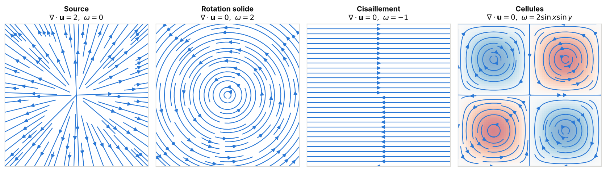
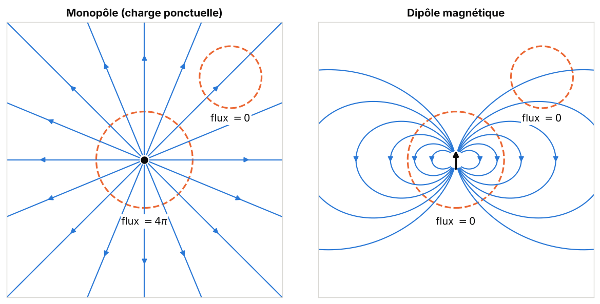
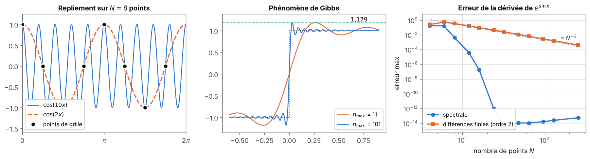
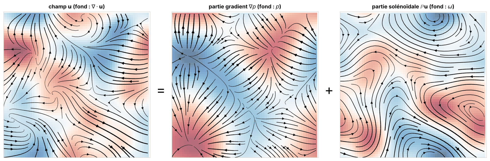
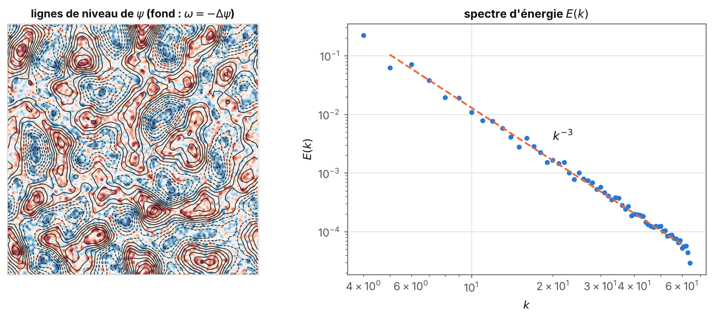

Calcul vectoriel et analyse de Fourier
Préparation · niveau L1 → L2 · ≈ 20 h
Objectifs
Ce module pose les outils mathématiques sur lesquels repose tout le reste du parcours. À la fin des vingt heures de travail prévues, vous saurez :
- calculer le gradient, la divergence, le rotationnel et le laplacien d’un champ donné, en coordonnées cartésiennes puis cylindriques, et interpréter physiquement chacun de ces opérateurs ;
- démontrer les identités \nabla\times(\nabla f) = \mathbf{0}, \nabla\cdot(\nabla\times\mathbf{u}) = 0 et \nabla\times(\nabla\times\mathbf{u}) = \nabla(\nabla\cdot\mathbf{u}) - \Delta\mathbf{u}, ainsi que les formules de produits, à l’aide du symbole de Levi-Civita ;
- appliquer les théorèmes de Green–Ostrogradski et de Stokes pour calculer un flux ou une circulation, et expliquer pourquoi \nabla\cdot\mathbf{B} = 0 signifie qu’il n’existe pas de monopôle magnétique ;
- construire un champ à divergence nulle à partir d’une fonction de courant (en 2D) ou d’un potentiel vecteur (en 3D), et choisir la jauge de Coulomb ;
- calculer une série de Fourier et une transformée de Fourier discrète avec NumPy, dériver un champ périodique par méthode spectrale, vérifier l’égalité de Parseval, et expliquer le repliement de spectre et la règle des 2/3 ;
- énoncer la décomposition de Helmholtz–Hodge, la démontrer dans une boîte périodique par Fourier, et programmer la projection de Leray en 2D et en 3D ;
- expliquer pourquoi la projection sur les champs à divergence nulle devient un problème de Poisson global dès que le domaine possède des parois.
Prérequis
Le point de départ est le niveau de fin de première année de licence scientifique (L1). Il faut être à l’aise avec les dérivées et les primitives des fonctions d’une variable, les développements limités, les intégrales simples et doubles sur un rectangle, les nombres complexes et l’exponentielle e^{i\theta}, le produit scalaire et le produit vectoriel dans \mathbb{R}^3.
Côté programmation, il suffit de savoir manipuler des tableaux NumPy, écrire une boucle et une fonction en Python. PyTorch n’est utilisé que pour sa différentiation automatique (torch.autograd.grad), présentée au chapitre 1.
Aucun autre module du site n’est requis : celui-ci est le premier du parcours. Il sert ensuite directement aux modules Mécanique des fluides et turbulence, Électromagnétisme, MHD et effet dynamo, Apprentissage profond pour la physique et Modèles génératifs sous contraintes physiques.
Plan de travail
Le niveau indique la difficulté : 1 pour les fondations, 2 pour le cœur du module, 3 pour ce qui touche déjà aux questions de recherche du stage. Il ne redescend jamais d’une séance à la suivante.
| Séance | Durée | Niveau | Contenu | Exercices |
|---|---|---|---|---|
| 1 | 3 h | 1 | Chapitre 1, sections 1.1 à 1.4 : champs, dérivées partielles, gradient, divergence, rotationnel, laplacien, notation indicielle | 1, 2 |
| 2 | 2 h | 1 | Chapitre 1, section 1.5 : coordonnées cylindriques, décomposition azimutale de Fourier | 3 |
| 3 | 3 h | 2 | Chapitre 2 : identités vectorielles, formules de produits, équation d’induction | 4, 5 |
| 4 | 3 h | 2 | Chapitre 3 : flux, circulation, théorèmes de Green–Ostrogradski et de Stokes, sens de \nabla\cdot\mathbf{B} = 0, bilan d’énergie | 6, 7, 8 |
| 5 | 2,5 h | 2 | Chapitre 4 : fonction de courant, potentiel vecteur, jauge de Coulomb, décomposition poloïdale–toroïdale | 9, 10 |
| 6 | 3,5 h | 2 | Chapitre 5 : séries de Fourier, TFD, FFT, dérivation spectrale, Parseval, repliement, règle des 2/3 | 11, 12, 13 |
| 7 | 3 h | 3 | Chapitre 6 : Helmholtz–Hodge, projection de Leray, parois et problème de Poisson–Neumann | 14, 15 |
| Total | 20 h | 6 chapitres | 15 exercices |
Chaque séance se termine par les exercices indiqués, à faire avant de lire leur solution. Les blocs de code sont courts (moins de 30 secondes chacun sur un ordinateur portable) : recopiez-les, exécutez-les, puis modifiez-les.
1. Champs scalaires et vectoriels, opérateurs différentiels
En magnétohydrodynamique (MHD), l’état d’un fluide conducteur est décrit par deux champs vectoriels, la vitesse \mathbf{u}(\mathbf{x}, t) et le champ magnétique \mathbf{B}(\mathbf{x}, t). Les lois physiques comme les contraintes visées par le stage (« divergence nulle ») s’écrivent avec quatre opérateurs : gradient, divergence, rotationnel et laplacien. Ce chapitre les définit, les interprète, puis les exprime dans les deux systèmes de coordonnées utiles au stage : cartésien, pour les boîtes périodiques, et cylindrique, pour la géométrie des expériences de dynamo comme VKS (von Kármán Sodium).
1.1 Champs et dérivées partielles
Définition 1.1 — Champ scalaire, champ vectoriel, ligne de champ Soit \Omega \subset \mathbb{R}^d un domaine (d = 2 ou 3). Un champ scalaire est une fonction f : \Omega \to \mathbb{R} (température, pression, fonction de courant). Un champ vectoriel est une fonction \mathbf{u} : \Omega \to \mathbb{R}^d qui associe un vecteur à chaque point (vitesse, champ magnétique). Une ligne de champ de \mathbf{u} est une courbe s \mapsto \mathbf{x}(s) tangente au champ en chacun de ses points :
\frac{\mathrm{d}\mathbf{x}}{\mathrm{d}s} = \mathbf{u}(\mathbf{x}(s)).
Pour un champ de vitesse stationnaire, les lignes de champ sont les trajectoires des particules fluides ; on les appelle alors lignes de courant.
Définition 1.2 — Dérivée partielle La dérivée partielle de f par rapport à x au point (x, y, z) est la dérivée de la fonction d’une variable obtenue en gelant y et z :
\partial_x f(x, y, z) = \lim_{h \to 0} \frac{f(x + h, y, z) - f(x, y, z)}{h}.
On note \partial_i = \partial / \partial x_i avec (x_1, x_2, x_3) = (x, y, z). Une fonction est de classe C^k si toutes ses dérivées partielles jusqu’à l’ordre k existent et sont continues.
Théorème 1.3 — Schwarz Si f est de classe C^2 sur un ouvert, ses dérivées croisées sont égales : \partial_i \partial_j f = \partial_j \partial_i f pour tous i, j.
Preuve. Résultat classique d’analyse de deuxième année, démontré dans tout cours de calcul différentiel ; nous l’admettons. L’idée est d’écrire de deux façons la « différence seconde » f(x+h, y+k) - f(x+h, y) - f(x, y+k) + f(x, y), en appliquant deux fois le théorème des accroissements finis dans un ordre puis dans l’autre. Toutes les identités du chapitre 2 en découlent. ∎
Exemple 1.4 — Dérivées croisées Pour f(x, y) = x^2 y + \sin(xy), on trouve \partial_x f = 2xy + y\cos(xy) et \partial_y f = x^2 + x\cos(xy). En dérivant la première par rapport à y et la seconde par rapport à x, on obtient dans les deux cas 2x + \cos(xy) - xy\sin(xy), comme l’annonce le théorème de Schwarz.
1.2 Le gradient
Définition 1.5 — Gradient Le gradient d’un champ scalaire f de classe C^1 est le champ vectoriel
\nabla f = (\partial_x f, \; \partial_y f, \; \partial_z f).
Le symbole \nabla (« nabla ») désigne le vecteur d’opérateurs (\partial_x, \partial_y, \partial_z).
Proposition 1.6 — Trois lectures du gradient Soit f de classe C^1.
Pour un petit déplacement \mathbf{h}, on a f(\mathbf{x} + \mathbf{h}) = f(\mathbf{x}) + \nabla f(\mathbf{x})\cdot\mathbf{h} + o(|\mathbf{h}|).
Parmi toutes les directions unitaires \mathbf{e}, la dérivée directionnelle \nabla f\cdot\mathbf{e} est maximale pour \mathbf{e} = \nabla f / |\nabla f|, et ce maximum vaut |\nabla f|.
Là où \nabla f \neq \mathbf{0}, le gradient est orthogonal aux surfaces de niveau \{f = c\}.
Preuve. Le point (i) est la définition de la différentiabilité, que garantit la continuité des dérivées partielles (admis). Pour (ii), l’inégalité de Cauchy–Schwarz donne \nabla f\cdot\mathbf{e} \le |\nabla f|\,|\mathbf{e}| = |\nabla f|, avec égalité si et seulement si \mathbf{e} est colinéaire à \nabla f et de même sens. Pour (iii), soit s \mapsto \mathbf{x}(s) une courbe tracée sur la surface \{f = c\}. Alors f(\mathbf{x}(s)) = c pour tout s ; en dérivant par la règle de dérivation des fonctions composées, \nabla f\cdot\mathbf{x}'(s) = 0. Le gradient est donc orthogonal à tout vecteur tangent à la surface. ∎
Par exemple, pour f = x^2 + y^2 + z^2, on trouve \nabla f = 2\mathbf{x} : les surfaces de niveau sont des sphères centrées en l’origine et le gradient est radial, donc orthogonal à ces sphères.
1.3 Divergence, rotationnel et laplacien
Définition 1.7 — Divergence, rotationnel, laplacien Pour un champ vectoriel \mathbf{u} = (u_x, u_y, u_z) de classe C^1, la divergence est le champ scalaire
\nabla\cdot\mathbf{u} = \partial_x u_x + \partial_y u_y + \partial_z u_z,
et le rotationnel est le champ vectoriel
\nabla\times\mathbf{u} = \left(\partial_y u_z - \partial_z u_y, \;\; \partial_z u_x - \partial_x u_z, \;\; \partial_x u_y - \partial_y u_x\right).
Le laplacien d’un champ scalaire f de classe C^2 est \Delta f = \nabla\cdot(\nabla f) = \partial_x^2 f + \partial_y^2 f + \partial_z^2 f. En coordonnées cartésiennes seulement, le laplacien d’un champ vectoriel s’obtient composante par composante : \Delta\mathbf{u} = (\Delta u_x, \Delta u_y, \Delta u_z).
Un moyen mnémotechnique : le rotationnel est le « produit vectoriel » formel \nabla\times\mathbf{u}, que l’on peut calculer comme un déterminant 3\times 3 dont la première ligne contient les vecteurs de base, la deuxième les opérateurs \partial_x, \partial_y, \partial_z et la troisième les composantes de \mathbf{u}. On appelle vorticité le rotationnel de la vitesse, \boldsymbol\omega = \nabla\times\mathbf{u}, et densité de courant celui du champ magnétique, \mathbf{j} = \nabla\times\mathbf{B} (en unités où \mu_0 = 1).
Proposition 1.8 — Sens physique des trois opérateurs (i) Divergence. Un petit volume \delta V transporté par l’écoulement \mathbf{u} évolue selon \frac{\mathrm{d}}{\mathrm{d}t}\delta V = (\nabla\cdot\mathbf{u})\,\delta V au premier ordre. Un champ de vitesse à divergence nulle conserve donc les volumes : c’est un écoulement incompressible.
Rotationnel. Pour une rotation solide de vecteur vitesse angulaire \boldsymbol\Omega, c’est-à-dire \mathbf{u} = \boldsymbol\Omega\times\mathbf{x}, on a \nabla\times\mathbf{u} = 2\boldsymbol\Omega. La vorticité mesure donc le double de la vitesse angulaire locale du fluide.
Laplacien. La moyenne de f sur une petite sphère de rayon \varepsilon centrée en \mathbf{x} vaut f(\mathbf{x}) + \frac{\varepsilon^2}{2d}\Delta f(\mathbf{x}) + O(\varepsilon^4) en dimension d. Le laplacien mesure l’écart entre la valeur moyenne au voisinage et la valeur au point ; c’est pourquoi il décrit la diffusion, qui lisse les champs.
Preuve.
Esquisse. Prenons un petit pavé d’arêtes \delta x, \delta y, \delta z parallèles aux axes. L’arête \delta x s’allonge à la vitesse u_x(x + \delta x) - u_x(x) \approx \partial_x u_x\,\delta x, et de même pour les deux autres. Les cisaillements déforment le pavé mais ne changent pas son volume au premier ordre. Donc \frac{\mathrm{d}}{\mathrm{d}t}(\delta x\,\delta y\,\delta z) \approx (\partial_x u_x + \partial_y u_y + \partial_z u_z)\,\delta x\,\delta y\,\delta z.
Calcul direct : \boldsymbol\Omega\times\mathbf{x} = (\Omega_y z - \Omega_z y, \;\Omega_z x - \Omega_x z, \;\Omega_x y - \Omega_y x), d’où (\nabla\times\mathbf{u})_x = \partial_y(\Omega_x y - \Omega_y x) - \partial_z(\Omega_z x - \Omega_x z) = \Omega_x + \Omega_x = 2\Omega_x, et de même pour les deux autres composantes.
On écrit le développement de Taylor f(\mathbf{x} + \mathbf{h}) = f + \nabla f\cdot\mathbf{h} + \frac12 \sum_{i,j} h_i h_j \partial_i\partial_j f + O(|\mathbf{h}|^3) et on moyenne sur la sphère |\mathbf{h}| = \varepsilon. Par symétrie, la moyenne de h_i est nulle et celle de h_i h_j vaut \varepsilon^2\delta_{ij}/d (les d directions jouent le même rôle et \sum_i h_i^2 = \varepsilon^2). Le terme cubique a une moyenne nulle par imparité. Il reste f + \frac{\varepsilon^2}{2d}\sum_i \partial_i^2 f + O(\varepsilon^4). ∎
Exemple 1.9 — Trois champs plans élémentaires Le champ \mathbf{u} = (x, y, 0) est une source : \nabla\cdot\mathbf{u} = 2 et \nabla\times\mathbf{u} = \mathbf{0}. Le champ \mathbf{u} = (-y, x, 0) est une rotation solide de vitesse angulaire 1 autour de \mathbf{e}_z : \nabla\cdot\mathbf{u} = 0 et \nabla\times\mathbf{u} = (0, 0, 2). Le champ de cisaillement \mathbf{u} = (y, 0, 0) a des lignes de courant droites, et pourtant \nabla\times\mathbf{u} = (0, 0, -1) : une petite roue à aubes placée dans cet écoulement tourne (exercice 2).

Exemple 1.10 — L’écoulement ABC L’écoulement ABC (Arnold–Beltrami–Childress), étudié en détail par Dombre et al. (1986), est défini sur le cube périodique [0, 2\pi)^3 par
\mathbf{u} = \big(A\sin z + C\cos y, \;\; B\sin x + A\cos z, \;\; C\sin y + B\cos x\big).
Chaque composante ne dépend pas de la coordonnée de même nom, donc \nabla\cdot\mathbf{u} = 0. La première composante du rotationnel vaut \partial_y u_z - \partial_z u_y = C\cos y + A\sin z = u_x, et un calcul identique pour les deux autres donne
\nabla\times\mathbf{u} = \mathbf{u}.
Un champ colinéaire à son rotationnel est appelé champ de Beltrami. Sa densité d’hélicité \mathbf{u}\cdot\boldsymbol\omega = |\mathbf{u}|^2 est partout positive ou nulle, et sa moyenne vaut \langle|\mathbf{u}|^2\rangle = A^2 + B^2 + C^2 (la moyenne de \sin^2 et de \cos^2 sur une période vaut 1/2, celle des produits croisés est nulle). C’est l’écoulement utilisé pour la dynamo cinématique de l’expérience E3 du dépôt (voir le rapport).
1.4 Notation indicielle
Les calculs en composantes deviennent vite illisibles. La notation indicielle les rend mécaniques ; elle sera l’outil principal du chapitre 2.
Définition 1.11 — Convention d’Einstein, symboles de Kronecker et de Levi-Civita Dans un produit, un indice répété deux fois est sommé de 1 à 3 : a_i b_i = \sum_{i=1}^3 a_i b_i. Le symbole de Kronecker \delta_{ij} vaut 1 si i = j et 0 sinon. Le symbole de Levi-Civita \varepsilon_{ijk} vaut +1 si (i, j, k) est une permutation paire de (1, 2, 3), -1 si elle est impaire, et 0 si deux indices sont égaux. Avec ces notations :
(\nabla f)_i = \partial_i f, \qquad \nabla\cdot\mathbf{u} = \partial_i u_i, \qquad (\mathbf{a}\times\mathbf{b})_i = \varepsilon_{ijk} a_j b_k, \qquad (\nabla\times\mathbf{u})_i = \varepsilon_{ijk}\partial_j u_k.
Lemme 1.12 — Contraction de deux symboles de Levi-Civita Pour tous indices j, k, l, m :
\varepsilon_{ijk}\,\varepsilon_{ilm} = \delta_{jl}\,\delta_{km} - \delta_{jm}\,\delta_{kl}.
Preuve. Les deux membres sont nuls si j = k ou si l = m. Supposons j \neq k. Dans la somme sur i, seul l’indice i différent de j et de k contribue ; pour que \varepsilon_{ilm} soit non nul, il faut alors \{l, m\} = \{j, k\}. Si (l, m) = (j, k), le membre de gauche vaut \varepsilon_{ijk}^2 = 1 et celui de droite 1 - 0 = 1. Si (l, m) = (k, j), le membre de gauche vaut \varepsilon_{ijk}\varepsilon_{ikj} = -1 et celui de droite 0 - 1 = -1. Dans tous les autres cas, les deux membres sont nuls. ∎
Lemme 1.13 — Antisymétrique contre symétrique Si S_{jk} = S_{kj} pour tous j, k, alors \varepsilon_{ijk} S_{jk} = 0 pour tout i.
Preuve. Les indices j et k sont muets ; on peut les renommer : \varepsilon_{ijk}S_{jk} = \varepsilon_{ikj}S_{kj} = -\varepsilon_{ijk}S_{jk}, en utilisant l’antisymétrie de \varepsilon puis la symétrie de S. Un nombre égal à son opposé est nul. ∎
1.5 Coordonnées cylindriques
Les expériences de dynamo en métal liquide se déroulent dans des cylindres : l’expérience VKS est un cylindre où deux turbines contrarotatives brassent du sodium, et DRESDYN un cylindre en précession. Le code SFEMaNS, utilisé par C. Nore et ses collaborateurs pour simuler ces écoulements, travaille en coordonnées cylindriques (r, \theta, z), avec une décomposition de Fourier en \theta et des éléments finis dans le plan méridien (r, z) (documentation de SFEMaNS, voir les Sources).
Définition 1.14 — Coordonnées et base cylindriques On pose x = r\cos\theta, y = r\sin\theta, z = z avec r \ge 0 et \theta \in [0, 2\pi). La base locale orthonormée est
\mathbf{e}_r = (\cos\theta, \sin\theta, 0), \qquad \mathbf{e}_\theta = (-\sin\theta, \cos\theta, 0), \qquad \mathbf{e}_z = (0, 0, 1).
Elle dépend du point : \partial_\theta\mathbf{e}_r = \mathbf{e}_\theta et \partial_\theta\mathbf{e}_\theta = -\mathbf{e}_r, tandis que les dérivées par rapport à r et z des vecteurs de base sont nulles. Un champ s’écrit \mathbf{u} = u_r\mathbf{e}_r + u_\theta\mathbf{e}_\theta + u_z\mathbf{e}_z. Un déplacement élémentaire vaut \mathrm{d}\mathbf{x} = \mathrm{d}r\,\mathbf{e}_r + r\,\mathrm{d}\theta\,\mathbf{e}_\theta + \mathrm{d}z\,\mathbf{e}_z et l’élément de volume \mathrm{d}V = r\,\mathrm{d}r\,\mathrm{d}\theta\,\mathrm{d}z.
Proposition 1.15 — Opérateurs en coordonnées cylindriques Pour des champs réguliers et r > 0 :
\nabla f = \partial_r f\,\mathbf{e}_r + \frac{1}{r}\partial_\theta f\,\mathbf{e}_\theta + \partial_z f\,\mathbf{e}_z, \tag{1.1}
\nabla\cdot\mathbf{u} = \frac{1}{r}\partial_r(r u_r) + \frac{1}{r}\partial_\theta u_\theta + \partial_z u_z, \tag{1.2}
\nabla\times\mathbf{u} = \Big(\frac{1}{r}\partial_\theta u_z - \partial_z u_\theta\Big)\mathbf{e}_r + \big(\partial_z u_r - \partial_r u_z\big)\mathbf{e}_\theta + \frac{1}{r}\Big(\partial_r(r u_\theta) - \partial_\theta u_r\Big)\mathbf{e}_z, \tag{1.3}
\Delta f = \frac{1}{r}\partial_r\big(r\,\partial_r f\big) + \frac{1}{r^2}\partial_\theta^2 f + \partial_z^2 f. \tag{1.4}
Le laplacien vectoriel n’est pas le laplacien des composantes :
\Delta\mathbf{u} = \Big(\Delta u_r - \frac{u_r}{r^2} - \frac{2}{r^2}\partial_\theta u_\theta\Big)\mathbf{e}_r + \Big(\Delta u_\theta - \frac{u_\theta}{r^2} + \frac{2}{r^2}\partial_\theta u_r\Big)\mathbf{e}_\theta + \Delta u_z\,\mathbf{e}_z. \tag{1.5}
Preuve. Pour (1.1), on écrit la différentielle de deux façons : \mathrm{d}f = \partial_r f\,\mathrm{d}r + \partial_\theta f\,\mathrm{d}\theta + \partial_z f\,\mathrm{d}z et \mathrm{d}f = \nabla f\cdot\mathrm{d}\mathbf{x} = (\nabla f)_r\,\mathrm{d}r + (\nabla f)_\theta\,r\,\mathrm{d}\theta + (\nabla f)_z\,\mathrm{d}z. L’identification donne (1.1), qu’on lit aussi comme l’opérateur \nabla = \mathbf{e}_r\partial_r + \mathbf{e}_\theta\frac{1}{r}\partial_\theta + \mathbf{e}_z\partial_z.
Pour (1.2), on applique cet opérateur à \mathbf{u} en n’oubliant pas que \partial_\theta agit aussi sur les vecteurs de base. Le seul terme nouveau vient de \mathbf{e}_\theta\cdot\frac{1}{r}\partial_\theta(u_r\mathbf{e}_r) = \frac{1}{r}u_r\,\mathbf{e}_\theta\cdot\mathbf{e}_\theta + \frac1r\partial_\theta u_r\,\mathbf{e}_\theta\cdot\mathbf{e}_r = \frac{u_r}{r} ; le terme en u_\theta donne \frac{1}{r}\partial_\theta u_\theta, car \partial_\theta \mathbf{e}_\theta = -\mathbf{e}_r est orthogonal à \mathbf{e}_\theta. Au total, \partial_r u_r + \frac{u_r}{r} + \frac{1}{r}\partial_\theta u_\theta + \partial_z u_z, ce qui est (1.2). La formule (1.3) s’obtient de la même manière avec le produit vectoriel, et (1.4) en composant (1.2) et (1.1).
Pour (1.5), on remarque que le laplacien cartésien d’un champ vectoriel est l’opérateur scalaire (1.4) appliqué à la fonction vectorielle \mathbf{x} \mapsto \mathbf{u}(\mathbf{x}). Les vecteurs de base ne dépendent que de \theta, donc seul le terme \frac{1}{r^2}\partial_\theta^2 agit sur eux :
\partial_\theta^2(u_r\mathbf{e}_r) = (\partial_\theta^2 u_r - u_r)\,\mathbf{e}_r + 2\,\partial_\theta u_r\,\mathbf{e}_\theta, \qquad \partial_\theta^2(u_\theta\mathbf{e}_\theta) = (\partial_\theta^2 u_\theta - u_\theta)\,\mathbf{e}_\theta - 2\,\partial_\theta u_\theta\,\mathbf{e}_r.
En regroupant les termes selon \mathbf{e}_r et \mathbf{e}_\theta, on obtient (1.5). ∎
Exemple 1.16 — Rotation solide, tourbillon ponctuel, fil électrique La rotation solide \mathbf{u} = \Omega r\,\mathbf{e}_\theta vérifie \nabla\cdot\mathbf{u} = \frac1r\partial_\theta(\Omega r) = 0 et, par (1.3), \nabla\times\mathbf{u} = \frac{1}{r}\partial_r(\Omega r^2)\,\mathbf{e}_z = 2\Omega\,\mathbf{e}_z, ce qui retrouve la proposition 1.8. Le tourbillon ponctuel \mathbf{u} = \frac{\Gamma}{2\pi r}\mathbf{e}_\theta a au contraire un rotationnel nul pour r > 0, puisque r u_\theta = \Gamma/(2\pi) est constant, bien que ses lignes de courant soient des cercles. Le champ magnétique créé par un fil rectiligne infini parcouru par un courant I, \mathbf{B} = \frac{\mu_0 I}{2\pi r}\mathbf{e}_\theta, a exactement la même structure ; nous le retrouverons au chapitre 3.
Remarque 1.17 — Décomposition azimutale de Fourier Une fonction est 2\pi-périodique en \theta ; on peut donc la développer en série de Fourier (chapitre 5) : f(r, \theta, z) = \sum_{m\in\mathbb{Z}} f_m(r, z)\,e^{im\theta}, avec f_{-m} = \overline{f_m} pour un champ réel. Dans les formules (1.1) à (1.5), \partial_\theta devient la multiplication par im. Pour un opérateur linéaire dont les coefficients ne dépendent pas de \theta, chaque mode m évolue indépendamment des autres et ne demande qu’un calcul dans le plan méridien (r, z). C’est le principe de SFEMaNS. Le mode m = 0 décrit la partie axisymétrique du champ ; dans les simulations de VKS de Bousquet et al. (2026), les quatre modes POD dominants sont axisymétriques et une signature m = 8 provient des huit pales des turbines.
Le code ci-dessous vérifie les formules de ce chapitre par différentiation automatique : PyTorch calcule les dérivées exactes (à l’arrondi près) d’une fonction programmée, sans différences finies. C’est le même mécanisme qui permet, dans les réseaux de neurones « informés par la physique », d’évaluer \nabla\cdot\mathbf{u} en sortie d’un réseau.
import torch
torch.set_num_threads(1)
torch.manual_seed(0)
dt = torch.float64
def jacobienne(champ, x):
"""u(x) et J[n, i, j] = du_i/dx_j aux points x (tableau n x 3)."""
u = champ(x)
J = torch.stack([torch.autograd.grad(u[:, i].sum(), x, create_graph=True)[0]
for i in range(3)], dim=1)
return u, J
def div_de(J):
return J.diagonal(dim1=1, dim2=2).sum(-1)
def rot_de(J):
return torch.stack([J[:, 2, 1] - J[:, 1, 2],
J[:, 0, 2] - J[:, 2, 0],
J[:, 1, 0] - J[:, 0, 1]], dim=1)
# 1) Écoulement ABC (A, B, C) = (1, 0.8, 0.6)
A, B, C = 1.0, 0.8, 0.6
def abc(x):
X, Y, Z = x[:, 0], x[:, 1], x[:, 2]
return torch.stack([A * torch.sin(Z) + C * torch.cos(Y),
B * torch.sin(X) + A * torch.cos(Z),
C * torch.sin(Y) + B * torch.cos(X)], dim=1)
x = (2 * torch.pi * torch.rand(1000, 3, dtype=dt)).requires_grad_(True)
u, J = jacobienne(abc, x)
print("ABC : max|div u| =", f"{div_de(J).abs().max().item():.1e}",
"; max|rot u - u| =", f"{(rot_de(J) - u).abs().max().item():.1e}")
# 2) Formules cylindriques contre calcul cartésien
# u = (r z) e_r + (r^2 sin t) e_t + (z cos t) e_z
def champ_cyl(x):
X, Y, Z = x[:, 0], x[:, 1], x[:, 2]
r, t = torch.sqrt(X**2 + Y**2), torch.atan2(Y, X)
ur, ut, uz = r * Z, r**2 * torch.sin(t), Z * torch.cos(t)
return torch.stack([ur * torch.cos(t) - ut * torch.sin(t),
ur * torch.sin(t) + ut * torch.cos(t), uz], dim=1)
y = (torch.rand(1000, 3, dtype=dt) * 2 - 1 + 0.0).requires_grad_(True)
u, J = jacobienne(champ_cyl, y)
X, Y, Z = y[:, 0], y[:, 1], y[:, 2]
r, t = torch.sqrt(X**2 + Y**2), torch.atan2(Y, X)
div_cyl = 2 * Z + r * torch.cos(t) + torch.cos(t) # formule (1.2)
rot_cyl_r = -Z * torch.sin(t) / r # (1/r) d_t u_z - d_z u_t
rot_cyl_t = r # d_z u_r - d_r u_z
rot_cyl_z = 3 * r * torch.sin(t) # (1/r)[d_r(r u_t) - d_t u_r]
w = rot_de(J)
w_r = w[:, 0] * torch.cos(t) + w[:, 1] * torch.sin(t)
w_t = -w[:, 0] * torch.sin(t) + w[:, 1] * torch.cos(t)
print("cylindrique : écart div =", f"{(div_de(J) - div_cyl).abs().max().item():.1e}",
"; écart rot =", f"{max((w_r - rot_cyl_r).abs().max().item(), (w_t - rot_cyl_t).abs().max().item(), (w[:, 2] - rot_cyl_z).abs().max().item()):.1e}")
# sortie :
# ABC : max|div u| = 0.0e+00 ; max|rot u - u| = 0.0e+00
# cylindrique : écart div = 8.9e-16 ; écart rot = 1.8e-15Pour l’écoulement ABC, les dérivées des sinus et cosinus sont calculées exactement, d’où des écarts strictement nuls. Pour le champ cylindrique, les écarts de l’ordre de 10^{-15} sont des erreurs d’arrondi : les formules (1.2) et (1.3) sont confirmées.
Ce qu’il faut retenir — chapitre 1
- Le gradient est orthogonal aux surfaces de niveau et pointe vers la plus forte croissance ; la divergence mesure le taux de variation des volumes ; la vorticité vaut le double de la vitesse angulaire locale ; le laplacien mesure l’écart à la moyenne locale.
- En notation indicielle : (\nabla\times\mathbf{u})_i = \varepsilon_{ijk}\partial_j u_k, et \varepsilon_{ijk}\varepsilon_{ilm} = \delta_{jl}\delta_{km} - \delta_{jm}\delta_{kl}.
- En cylindrique, les vecteurs de base tournent avec \theta : d’où les termes en u_r/r dans la divergence et en u_r/r^2, \partial_\theta u_\theta/r^2 dans le laplacien vectoriel.
- L’écoulement ABC est un champ de Beltrami (\nabla\times\mathbf{u} = \mathbf{u}), à divergence nulle et d’hélicité moyenne A^2 + B^2 + C^2.
2. Identités vectorielles
Trois identités et une poignée de formules de produits font toute l’algèbre de la MHD. Elles transforment les équations de Maxwell et la loi d’Ohm en équation d’induction, montrent qu’un rotationnel est automatiquement à divergence nulle (c’est le principe des contraintes « par potentiel » du stage) et réécrivent les termes non linéaires sous des formes interprétables.
2.1 Les trois identités fondamentales
Théorème 2.1 — Le rotationnel d’un gradient est nul Pour tout champ scalaire f de classe C^2 :
\nabla\times(\nabla f) = \mathbf{0}.
Preuve. En notation indicielle, [\nabla\times(\nabla f)]_i = \varepsilon_{ijk}\,\partial_j\partial_k f. D’après le théorème de Schwarz, S_{jk} = \partial_j\partial_k f est symétrique en (j, k) ; le lemme 1.13 conclut. ∎
Théorème 2.2 — La divergence d’un rotationnel est nulle Pour tout champ vectoriel \mathbf{u} de classe C^2 :
\nabla\cdot(\nabla\times\mathbf{u}) = 0.
Preuve. On a \nabla\cdot(\nabla\times\mathbf{u}) = \partial_i(\varepsilon_{ijk}\partial_j u_k) = \varepsilon_{ijk}\,\partial_i\partial_j u_k. Pour chaque k fixé, \partial_i\partial_j u_k est symétrique en (i, j), alors que \varepsilon_{ijk} est antisymétrique en (i, j) : la somme est nulle par le même argument que le lemme 1.13. ∎
Théorème 2.3 — Rotationnel du rotationnel Pour tout champ vectoriel \mathbf{u} de classe C^2 :
\nabla\times(\nabla\times\mathbf{u}) = \nabla(\nabla\cdot\mathbf{u}) - \Delta\mathbf{u}. \tag{2.1}
Preuve. On utilise l’invariance de \varepsilon par permutation circulaire, \varepsilon_{ijk} = \varepsilon_{kij}, puis le lemme 1.12 :
[\nabla\times(\nabla\times\mathbf{u})]_i = \varepsilon_{ijk}\,\partial_j\big(\varepsilon_{klm}\partial_l u_m\big) = \varepsilon_{kij}\varepsilon_{klm}\,\partial_j\partial_l u_m = (\delta_{il}\delta_{jm} - \delta_{im}\delta_{jl})\,\partial_j\partial_l u_m.
Le premier terme donne \partial_j\partial_i u_j = \partial_i(\partial_j u_j), la composante i de \nabla(\nabla\cdot\mathbf{u}) ; le second donne -\partial_j\partial_j u_i, la composante i de -\Delta\mathbf{u}. ∎
Remarque 2.4 — Le laplacien vectoriel hors des coordonnées cartésiennes En coordonnées curvilignes, on définit le laplacien vectoriel par \Delta\mathbf{u} = \nabla(\nabla\cdot\mathbf{u}) - \nabla\times(\nabla\times\mathbf{u}). On peut vérifier que cette définition redonne la formule (1.5) en cylindrique, ce qui explique les termes supplémentaires de cette formule.
2.2 Formules de produits
On note (\mathbf{u}\cdot\nabla)\mathbf{v} le vecteur de composantes u_j\partial_j v_i : c’est la dérivée de \mathbf{v} dans la direction de \mathbf{u}, multipliée par |\mathbf{u}|. Le terme d’advection de Navier–Stokes est (\mathbf{u}\cdot\nabla)\mathbf{u}.
Proposition 2.5 — Formules de produits Pour des champs scalaires f, g et vectoriels \mathbf{u}, \mathbf{v} de classe C^1 :
\nabla(fg) = f\,\nabla g + g\,\nabla f ;
\nabla\cdot(f\mathbf{u}) = f\,\nabla\cdot\mathbf{u} + \mathbf{u}\cdot\nabla f ;
\nabla\times(f\mathbf{u}) = f\,\nabla\times\mathbf{u} + \nabla f\times\mathbf{u} ;
\nabla\cdot(\mathbf{u}\times\mathbf{v}) = \mathbf{v}\cdot(\nabla\times\mathbf{u}) - \mathbf{u}\cdot(\nabla\times\mathbf{v}) ;
\nabla\times(\mathbf{u}\times\mathbf{v}) = \mathbf{u}\,(\nabla\cdot\mathbf{v}) - \mathbf{v}\,(\nabla\cdot\mathbf{u}) + (\mathbf{v}\cdot\nabla)\mathbf{u} - (\mathbf{u}\cdot\nabla)\mathbf{v} ;
\nabla(\mathbf{u}\cdot\mathbf{v}) = (\mathbf{u}\cdot\nabla)\mathbf{v} + (\mathbf{v}\cdot\nabla)\mathbf{u} + \mathbf{u}\times(\nabla\times\mathbf{v}) + \mathbf{v}\times(\nabla\times\mathbf{u}).
Preuve. Toutes reposent sur la règle de Leibniz \partial_i(ab) = a\,\partial_i b + b\,\partial_i a. Nous démontrons (b), (d) et (e) ; (a), (c) et (f) font l’objet de l’exercice 4.
\partial_i(f u_i) = f\,\partial_i u_i + u_i\,\partial_i f.
Avec \varepsilon_{ijk} = \varepsilon_{kij} et \varepsilon_{ijk} = -\varepsilon_{jik} :
\partial_i(\varepsilon_{ijk}u_j v_k) = v_k\,\varepsilon_{kij}\partial_i u_j - u_j\,\varepsilon_{jik}\partial_i v_k = \mathbf{v}\cdot(\nabla\times\mathbf{u}) - \mathbf{u}\cdot(\nabla\times\mathbf{v}).
- Avec le lemme 1.12 :
\varepsilon_{ijk}\partial_j(\varepsilon_{klm}u_l v_m) = (\delta_{il}\delta_{jm} - \delta_{im}\delta_{jl})\,\partial_j(u_l v_m) = \partial_j(u_i v_j) - \partial_j(u_j v_i),
et le développement v_j\partial_j u_i + u_i\partial_j v_j - v_i\partial_j u_j - u_j\partial_j v_i est la formule annoncée. ∎
À retenir — Forme de Lamb du terme d’advection En prenant \mathbf{v} = \mathbf{u} dans (f), on obtient \nabla(|\mathbf{u}|^2) = 2(\mathbf{u}\cdot\nabla)\mathbf{u} + 2\,\mathbf{u}\times\boldsymbol\omega, soit
(\mathbf{u}\cdot\nabla)\mathbf{u} = \nabla\Big(\frac{|\mathbf{u}|^2}{2}\Big) - \mathbf{u}\times\boldsymbol\omega. \tag{2.2}
De même, avec \mathbf{u} = \mathbf{v} = \mathbf{B} et \mathbf{j} = \nabla\times\mathbf{B}, la force de Laplace (en unités d’Alfvén) se décompose en tension magnétique et gradient de pression magnétique :
\mathbf{j}\times\mathbf{B} = (\mathbf{B}\cdot\nabla)\mathbf{B} - \nabla\Big(\frac{|\mathbf{B}|^2}{2}\Big). \tag{2.3}
2.3 Application : l’équation d’induction
Dans un conducteur de conductivité \sigma en mouvement à la vitesse \mathbf{u}, la loi d’Ohm s’écrit \mathbf{j} = \sigma(\mathbf{E} + \mathbf{u}\times\mathbf{B}). L’équation de Maxwell–Faraday s’écrit \partial_t\mathbf{B} = -\nabla\times\mathbf{E} et, dans l’approximation de la MHD où l’on néglige le courant de déplacement, l’équation de Maxwell–Ampère se réduit à \nabla\times\mathbf{B} = \mu_0\mathbf{j}. On élimine \mathbf{E} = \mathbf{j}/\sigma - \mathbf{u}\times\mathbf{B} et \mathbf{j}, avec \eta = 1/(\mu_0\sigma) supposé constant :
\partial_t\mathbf{B} = \nabla\times(\mathbf{u}\times\mathbf{B}) - \eta\,\nabla\times(\nabla\times\mathbf{B}).
Proposition 2.6 — Équation d’induction et conservation de \nabla\cdot\mathbf{B} = 0 Si \nabla\cdot\mathbf{B} = 0 et \nabla\cdot\mathbf{u} = 0, l’équation précédente s’écrit
\partial_t\mathbf{B} = (\mathbf{B}\cdot\nabla)\mathbf{u} - (\mathbf{u}\cdot\nabla)\mathbf{B} + \eta\,\Delta\mathbf{B}. \tag{2.4}
De plus, pour toute solution régulière, \partial_t(\nabla\cdot\mathbf{B}) = 0 : si le champ initial est à divergence nulle, il le reste.
Preuve. Le théorème 2.3 avec \nabla\cdot\mathbf{B} = 0 donne \nabla\times(\nabla\times\mathbf{B}) = -\Delta\mathbf{B}, et la formule de produit (e) avec \nabla\cdot\mathbf{u} = \nabla\cdot\mathbf{B} = 0 donne \nabla\times(\mathbf{u}\times\mathbf{B}) = (\mathbf{B}\cdot\nabla)\mathbf{u} - (\mathbf{u}\cdot\nabla)\mathbf{B}. Pour la seconde affirmation, on prend la divergence de l’équation non simplifiée : le second membre est un rotationnel, sa divergence est nulle par le théorème 2.2. ∎
Les trois termes de (2.4) ont un sens physique clair : (\mathbf{B}\cdot\nabla)\mathbf{u} étire les lignes de champ (c’est le moteur de l’effet dynamo), -(\mathbf{u}\cdot\nabla)\mathbf{B} les transporte, et \eta\Delta\mathbf{B} les diffuse. Le rapport des deux premiers au troisième est mesuré par le nombre de Reynolds magnétique Rm = UL/\eta.
Remarque 2.7 — Ce que la conservation ne garantit pas La proposition 2.6 est une propriété de l’équation continue. Un schéma numérique, et a fortiori un modèle génératif qui produit \mathbf{B} directement, ne la respecte pas automatiquement. Brackbill et Barnes (1980) ont montré qu’une divergence numérique non nulle introduit une force parasite parallèle à \mathbf{B} qui fausse la dynamique ; Tóth (2000) compare plusieurs méthodes de contrôle de \nabla\cdot\mathbf{B} dans les codes MHD. Les chapitres 4 et 6 présentent les deux grandes familles de remèdes : paramétrer par un potentiel, ou projeter.
Exemple 2.8 — Vérification sur l’écoulement ABC Pour l’écoulement ABC, \nabla\times(\nabla\times\mathbf{u}) = \nabla\times\mathbf{u} = \mathbf{u}. D’autre part \nabla\cdot\mathbf{u} = 0 et chaque composante est une combinaison de fonctions comme \sin z ou \cos y dont le laplacien vaut l’opposé : \Delta\mathbf{u} = -\mathbf{u}. Le membre de droite de (2.1) vaut donc 0 - (-\mathbf{u}) = \mathbf{u}, en accord avec le membre de gauche.
Le code suivant vérifie les identités et deux formules de produits sur des champs « quelconques » : de petits réseaux de neurones aléatoires \mathbb{R}^3 \to \mathbb{R}^3. Les opérateurs sont écrits comme des fonctions qui prennent un champ et renvoient un champ, ce qui permet de les composer comme en mathématiques.
import torch
torch.set_num_threads(1)
torch.manual_seed(1)
dt = torch.float64
# Opérateurs par différentiation automatique : chacun prend un champ (fonction de x)
# et renvoie un nouveau champ, ce qui permet de les composer.
def jac(F, x):
u = F(x)
return torch.stack([torch.autograd.grad(u[:, i].sum(), x, create_graph=True)[0]
for i in range(u.shape[1])], dim=1)
def grad(f):
return lambda x: torch.autograd.grad(f(x).sum(), x, create_graph=True)[0]
def div(F):
return lambda x: jac(F, x).diagonal(dim1=1, dim2=2).sum(-1)
def rot(F):
def r(x):
J = jac(F, x)
return torch.stack([J[:, 2, 1] - J[:, 1, 2],
J[:, 0, 2] - J[:, 2, 0],
J[:, 1, 0] - J[:, 0, 1]], dim=1)
return r
def lap_vec(F): # laplacien composante par composante
return lambda x: torch.stack([div(grad(lambda y, i=i: F(y)[:, i]))(x)
for i in range(3)], dim=1)
# Champs « quelconques » : petits réseaux de neurones aléatoires (lisses, tanh)
def reseau(d_out):
W1, b1 = torch.randn(3, 32, dtype=dt), torch.randn(32, dtype=dt)
W2 = torch.randn(32, d_out, dtype=dt) / 4
return lambda x: torch.tanh(x @ W1 + b1) @ W2
u, v, f = reseau(3), reseau(3), reseau(1)
f_s = lambda x: f(x)[:, 0]
x = torch.randn(500, 3, dtype=dt).requires_grad_(True)
def ecart(a, b): # écart max (et taille des termes si b est non nul)
e = f"{(a - b).abs().max().item():.1e}"
return e if b.abs().max() == 0 else e + f" (termes ~ {b.abs().max().item():.1e})"
print("rot grad f :", ecart(rot(grad(f_s))(x), 0 * x),
"; max|grad f| =", f"{grad(f_s)(x).abs().max().item():.1e}")
print("div rot u :", ecart(div(rot(u))(x), 0 * x[:, 0]),
"; max|rot u| =", f"{rot(u)(x).abs().max().item():.1e}")
lhs = rot(rot(u))(x)
rhs = grad(div(u))(x) - lap_vec(u)(x)
print("rot rot u = grad div u - lap u :", ecart(lhs, rhs))
# Formules de produits
uv = lambda x: torch.linalg.cross(u(x), v(x), dim=1)
lhs = div(uv)(x)
rhs = (v(x) * rot(u)(x)).sum(1) - (u(x) * rot(v)(x)).sum(1)
print("div(u x v) = v.rot u - u.rot v :", ecart(lhs, rhs))
fu = lambda x: f(x) * u(x)
lhs = rot(fu)(x)
rhs = f(x) * rot(u)(x) + torch.linalg.cross(grad(f_s)(x), u(x), dim=1)
print("rot(f u) = f rot u + grad f x u:", ecart(lhs, rhs))
# sortie :
# rot grad f : 4.4e-16 ; max|grad f| = 1.8e+00
# div rot u : 2.4e-15 ; max|rot u| = 2.5e+00
# rot rot u = grad div u - lap u : 2.7e-15 (termes ~ 7.2e+00)
# div(u x v) = v.rot u - u.rot v : 3.6e-15 (termes ~ 6.6e+00)
# rot(f u) = f rot u + grad f x u: 2.3e-15 (termes ~ 3.9e+00)Tous les écarts sont au niveau de l’arrondi en double précision (environ 10^{-16} fois la taille des termes, multipliée par le nombre d’opérations). Ce type de vérification est celui qu’on utilise pour calculer une pénalité de divergence sur la sortie d’un réseau. Lucor, Agrawal et Sergent (2022) ont d’ailleurs observé, pour des réseaux informés par la physique appliqués à la convection turbulente, qu’il est utile de relâcher la contrainte d’incompressibilité pour faciliter l’optimisation : imposer exactement \nabla\cdot\mathbf{u} = 0 n’est pas toujours la meilleure stratégie d’apprentissage.
Ce qu’il faut retenir — chapitre 2
- \nabla\times\nabla f = \mathbf{0} et \nabla\cdot(\nabla\times\mathbf{u}) = 0 découlent du théorème de Schwarz et de l’antisymétrie de \varepsilon_{ijk}.
- \nabla\times(\nabla\times\mathbf{u}) = \nabla(\nabla\cdot\mathbf{u}) - \Delta\mathbf{u} découle de la contraction \varepsilon_{kij}\varepsilon_{klm}.
- Les formules de produits se démontrent toutes par la règle de Leibniz en notation indicielle.
- L’équation d’induction \partial_t\mathbf{B} = \nabla\times(\mathbf{u}\times\mathbf{B}) + \eta\Delta\mathbf{B} conserve \nabla\cdot\mathbf{B} = 0 au niveau continu, mais pas forcément après discrétisation ou génération.
3. Flux, circulation et théorèmes intégraux
Les lois de conservation se lisent mieux sous forme intégrale : ce qui sort d’un volume par sa surface est ce qui disparaît à l’intérieur. La contrainte locale \nabla\cdot\mathbf{B} = 0 n’est autre que la version infinitésimale de l’énoncé « le flux magnétique à travers toute surface fermée est nul », et les bilans d’énergie du stage s’obtiennent par les mêmes théorèmes.
3.1 Circulation et flux
Définition 3.1 — Circulation Soit \mathcal{C} une courbe orientée paramétrée par \boldsymbol\gamma : [a, b] \to \mathbb{R}^3. La circulation de \mathbf{u} le long de \mathcal{C} est
\int_{\mathcal{C}}\mathbf{u}\cdot\mathrm{d}\boldsymbol\ell = \int_a^b \mathbf{u}(\boldsymbol\gamma(s))\cdot\boldsymbol\gamma'(s)\,\mathrm{d}s.
Elle ne dépend pas du paramétrage, pourvu que celui-ci respecte l’orientation. On note \oint la circulation le long d’une courbe fermée.
Définition 3.2 — Flux Soit S une surface orientée paramétrée par (s, t) \mapsto \mathbf{X}(s, t). L’élément de surface orienté est \mathbf{n}\,\mathrm{d}S = (\partial_s\mathbf{X}\times\partial_t\mathbf{X})\,\mathrm{d}s\,\mathrm{d}t et le flux de \mathbf{u} à travers S est
\Phi = \iint_S \mathbf{u}\cdot\mathbf{n}\,\mathrm{d}S.
Pour une surface fermée, on choisit la normale sortante.
Proposition 3.3 — Circulation d’un gradient Pour f de classe C^1 et une courbe allant de \boldsymbol\gamma(a) à \boldsymbol\gamma(b) :
\int_{\mathcal{C}}\nabla f\cdot\mathrm{d}\boldsymbol\ell = f(\boldsymbol\gamma(b)) - f(\boldsymbol\gamma(a)).
En particulier, la circulation d’un gradient le long de toute courbe fermée est nulle.
Preuve. Par dérivation des fonctions composées, \frac{\mathrm{d}}{\mathrm{d}s}f(\boldsymbol\gamma(s)) = \nabla f(\boldsymbol\gamma(s))\cdot\boldsymbol\gamma'(s) ; on intègre de a à b. ∎
3.2 Les trois théorèmes intégraux
Théorème 3.4 — Green–Riemann (dans le plan) Soit D \subset \mathbb{R}^2 un domaine borné dont le bord \partial D est une courbe fermée régulière par morceaux, parcourue dans le sens trigonométrique. Pour P, Q de classe C^1 :
\oint_{\partial D}(P\,\mathrm{d}x + Q\,\mathrm{d}y) = \iint_D(\partial_x Q - \partial_y P)\,\mathrm{d}x\,\mathrm{d}y.
Preuve. Faisons la preuve pour un rectangle D = [a, b]\times[c, d]. Par le théorème fondamental de l’analyse,
\iint_D\partial_x Q\,\mathrm{d}x\,\mathrm{d}y = \int_c^d\big[Q(b, y) - Q(a, y)\big]\,\mathrm{d}y,
qui est exactement la contribution de Q\,\mathrm{d}y sur le côté droit (parcouru vers le haut) et sur le côté gauche (parcouru vers le bas) ; les côtés horizontaux n’y contribuent pas car \mathrm{d}y = 0. De même, -\iint_D\partial_y P = \int_a^b[P(x, c) - P(x, d)]\,\mathrm{d}x est la contribution de P\,\mathrm{d}x sur le bas (vers la droite) et le haut (vers la gauche). Pour un domaine général, on l’approche par une réunion de petits rectangles : chaque arête intérieure est parcourue deux fois en sens opposés et sa contribution s’annule, il ne reste que le bord extérieur. Rendre ce passage à la limite rigoureux demande des hypothèses de régularité sur \partial D, que nous admettons. ∎
Théorème 3.5 — Green–Ostrogradski (théorème de la divergence) Soit \Omega \subset \mathbb{R}^3 un domaine borné de bord \partial\Omega régulier par morceaux, de normale sortante \mathbf{n}. Pour \mathbf{u} de classe C^1 jusqu’au bord :
\iiint_\Omega\nabla\cdot\mathbf{u}\,\mathrm{d}V = \oint_{\partial\Omega}\mathbf{u}\cdot\mathbf{n}\,\mathrm{d}S. \tag{3.1}
Preuve. Pour un pavé [a_1, b_1]\times[a_2, b_2]\times[a_3, b_3], on traite chaque terme de la divergence séparément :
\iiint\partial_x u_x\,\mathrm{d}V = \iint\big[u_x(b_1, y, z) - u_x(a_1, y, z)\big]\,\mathrm{d}y\,\mathrm{d}z,
ce qui est le flux de \mathbf{u} à travers les faces x = b_1 (normale \mathbf{e}_x) et x = a_1 (normale -\mathbf{e}_x). On procède de même en y et en z et on additionne. Pour un domaine général, on découpe en petits pavés : le flux à travers une face intérieure commune à deux pavés est compté deux fois avec des normales opposées et s’annule. Comme pour le théorème 3.4, la justification complète du passage à la limite est admise. ∎
Théorème 3.6 — Stokes Soit S une surface orientée dont le bord \partial S est une courbe fermée, orientée selon la règle de la main droite par rapport à \mathbf{n}. Pour \mathbf{u} de classe C^1 :
\oint_{\partial S}\mathbf{u}\cdot\mathrm{d}\boldsymbol\ell = \iint_S(\nabla\times\mathbf{u})\cdot\mathbf{n}\,\mathrm{d}S. \tag{3.2}
Preuve. Si S est un domaine plan du plan z = 0, on a \mathbf{n} = \mathbf{e}_z et (\nabla\times\mathbf{u})\cdot\mathbf{e}_z = \partial_x u_y - \partial_y u_x : c’est le théorème 3.4 avec P = u_x et Q = u_y. Pour une surface courbe paramétrée par (s, t), on ramène les deux membres à des intégrales dans le plan (s, t) et on applique de nouveau Green–Riemann ; ce calcul est admis ici (voir le chapitre 4 des notes de Tong). ∎
Ces trois théorèmes ont la même structure : l’intégrale d’une dérivée sur un domaine égale l’intégrale de la fonction sur le bord du domaine.
Appliquons (3.1) à une petite boule B_\varepsilon centrée en \mathbf{x}, de volume |B_\varepsilon|. La moyenne de \nabla\cdot\mathbf{u} sur cette boule tend vers \nabla\cdot\mathbf{u}(\mathbf{x}) quand \varepsilon \to 0, par continuité, d’où
\nabla\cdot\mathbf{u}(\mathbf{x}) = \lim_{\varepsilon\to 0}\frac{1}{|B_\varepsilon|}\oint_{\partial B_\varepsilon}\mathbf{u}\cdot\mathbf{n}\,\mathrm{d}S.
De même, (3.2) appliqué à un petit disque D_\varepsilon de normale \mathbf{n} centré en \mathbf{x} donne
(\nabla\times\mathbf{u})(\mathbf{x})\cdot\mathbf{n} = \lim_{\varepsilon\to 0}\frac{1}{\pi\varepsilon^2}\oint_{\partial D_\varepsilon}\mathbf{u}\cdot\mathrm{d}\boldsymbol\ell.
Ces deux formules ne font intervenir aucun système de coordonnées : la divergence est un flux sortant par unité de volume, la composante normale du rotationnel une circulation par unité d’aire. Elles expliquent aussi les formules cylindriques du chapitre 1, qu’on retrouve en calculant flux et circulation sur un petit élément de volume r\,\mathrm{d}r\,\mathrm{d}\theta\,\mathrm{d}z. Le schéma interactif suivant le vérifie en 2D, où la boule devient un disque et le flux une intégrale sur un cercle.
Avec les deux champs singuliers de la liste, la limite échoue dès que le cercle entoure l’origine : la circulation du tourbillon ponctuel reste égale à 2\pi et le flux de la source ponctuelle aussi, quel que soit le rayon, alors que la vorticité et la divergence sont nulles partout ailleurs. Toute la « source » est concentrée au point singulier ; nous retrouverons ce phénomène à l’exemple 3.9 et à la remarque 4.3.
Le théorème de la divergence fournit aussi les formules d’intégration par parties en dimension quelconque.
Corollaire 3.7 — Intégrations par parties Pour des champs réguliers sur \Omega :
\int_\Omega f\,\nabla\cdot\mathbf{u}\,\mathrm{d}V = \oint_{\partial\Omega}f\,\mathbf{u}\cdot\mathbf{n}\,\mathrm{d}S - \int_\Omega\mathbf{u}\cdot\nabla f\,\mathrm{d}V, \tag{3.3}
\int_\Omega\mathbf{v}\cdot(\nabla\times\mathbf{u})\,\mathrm{d}V = \int_\Omega\mathbf{u}\cdot(\nabla\times\mathbf{v})\,\mathrm{d}V + \oint_{\partial\Omega}(\mathbf{u}\times\mathbf{v})\cdot\mathbf{n}\,\mathrm{d}S. \tag{3.4}
Dans une boîte périodique, les termes de bord s’annulent, car les contributions de deux faces opposées se compensent (même valeur du champ, normales opposées).
Preuve. On applique (3.1) à f\mathbf{u} avec la formule de produit (b), puis à \mathbf{u}\times\mathbf{v} avec la formule (d). ∎
3.3 Sens de \nabla\cdot\mathbf{B} = 0
Proposition 3.8 — Pas de monopôle magnétique Pour un champ \mathbf{B} de classe C^1 sur un ouvert U, les deux énoncés suivants sont équivalents :
\nabla\cdot\mathbf{B} = 0 en tout point de U ;
le flux de \mathbf{B} à travers toute surface fermée bordant un domaine contenu dans U est nul.
Preuve.
- ⇒ (ii) est le théorème 3.5. Pour (ii) ⇒ (i), supposons \nabla\cdot\mathbf{B}(\mathbf{x}_0) > 0 en un point. Par continuité, la divergence reste strictement positive sur une petite boule centrée en \mathbf{x}_0, et le théorème 3.5 donne un flux strictement positif à travers la sphère qui la borde, ce qui contredit (ii). Le cas négatif est identique. ∎
Trois conséquences physiques en découlent. D’abord, le flux magnétique à travers une surface ne dépend que de la courbe qui la borde : deux surfaces de même bord forment ensemble une surface fermée, de flux total nul. Ensuite, dans un tube de flux (réunion de lignes de champ s’appuyant sur une petite courbe fermée), le flux est le même à travers toutes les sections. Enfin, une ligne de champ ne peut ni commencer ni finir en un point : il n’y a ni source ni puits de champ magnétique. Le champ électrique, lui, vérifie la loi de Gauss \nabla\cdot\mathbf{E} = \rho/\varepsilon_0 ; ses sources sont les charges. L’équation \nabla\cdot\mathbf{B} = 0 exprime qu’aucune « charge magnétique » n’a jamais été observée.

Exemple 3.9 — Le fil rectiligne et le théorème d’Ampère Pour \mathbf{B} = \frac{\mu_0 I}{2\pi r}\mathbf{e}_\theta, la formule (1.2) donne \nabla\cdot\mathbf{B} = 0 et la formule (1.3) donne \nabla\times\mathbf{B} = \frac{1}{r}\partial_r\big(\frac{\mu_0 I}{2\pi}\big)\mathbf{e}_z = \mathbf{0} pour r > 0. Pourtant, la circulation sur un cercle de rayon R centré sur le fil vaut
\oint\mathbf{B}\cdot\mathrm{d}\boldsymbol\ell = \int_0^{2\pi}\frac{\mu_0 I}{2\pi R}\,R\,\mathrm{d}\theta = \mu_0 I.
Il n’y a pas de contradiction avec le théorème de Stokes : tout disque bordé par ce cercle est traversé par le fil, où \nabla\times\mathbf{B} = \mu_0\mathbf{j} est concentré. Le théorème de Stokes appliqué à \nabla\times\mathbf{B} = \mu_0\mathbf{j} est précisément le théorème d’Ampère : la circulation de \mathbf{B} égale \mu_0 fois le courant enlacé.
3.4 Bilan d’énergie magnétique
Le bilan d’énergie est l’une des contraintes physiques visées par l’offre de stage. Voici comment il se déduit des outils de ce chapitre.
Proposition 3.10 — Bilan d’énergie magnétique dans une boîte périodique Soit \mathbf{B} une solution périodique et régulière de l’équation d’induction \partial_t\mathbf{B} = \nabla\times(\mathbf{u}\times\mathbf{B}) + \eta\Delta\mathbf{B} avec \nabla\cdot\mathbf{B} = 0, et \mathbf{j} = \nabla\times\mathbf{B}. Alors
\frac{\mathrm{d}}{\mathrm{d}t}\Big\langle\frac{|\mathbf{B}|^2}{2}\Big\rangle = -\big\langle\mathbf{u}\cdot(\mathbf{j}\times\mathbf{B})\big\rangle - \eta\,\big\langle|\mathbf{j}|^2\big\rangle. \tag{3.5}
Preuve. On multiplie l’équation par \mathbf{B} et on moyenne : \frac{\mathrm{d}}{\mathrm{d}t}\langle|\mathbf{B}|^2/2\rangle = \langle\mathbf{B}\cdot\nabla\times(\mathbf{u}\times\mathbf{B})\rangle + \eta\langle\mathbf{B}\cdot\Delta\mathbf{B}\rangle. Pour le second terme, le théorème 2.3 avec \nabla\cdot\mathbf{B} = 0 donne \Delta\mathbf{B} = -\nabla\times\mathbf{j}, puis (3.4) sans terme de bord donne \langle\mathbf{B}\cdot\nabla\times\mathbf{j}\rangle = \langle\mathbf{j}\cdot\nabla\times\mathbf{B}\rangle = \langle|\mathbf{j}|^2\rangle. Pour le premier terme, (3.4) donne \langle\mathbf{B}\cdot\nabla\times(\mathbf{u}\times\mathbf{B})\rangle = \langle(\mathbf{u}\times\mathbf{B})\cdot\mathbf{j}\rangle, et le produit mixte vérifie (\mathbf{u}\times\mathbf{B})\cdot\mathbf{j} = \mathbf{u}\cdot(\mathbf{B}\times\mathbf{j}) = -\mathbf{u}\cdot(\mathbf{j}\times\mathbf{B}). ∎
Le terme -\eta\langle|\mathbf{j}|^2\rangle, toujours négatif ou nul, représente la dissipation par effet Joule. Le terme -\langle\mathbf{u}\cdot(\mathbf{j}\times\mathbf{B})\rangle est l’opposé du travail de la force de Laplace sur le fluide : quand le fluide travaille contre cette force, il cède de l’énergie cinétique au champ magnétique. Une dynamo est un écoulement pour lequel ce transfert l’emporte durablement sur la dissipation.
Le code suivant vérifie numériquement le théorème de la divergence et celui de Stokes par quadrature (Gauss–Legendre en \cos\theta, trapèzes en \varphi, une méthode très précise pour les fonctions régulières sur la sphère).
import numpy as np
# Quadrature sur une sphère : Gauss-Legendre en cos(theta), trapèzes en phi
def flux_sphere(champ, centre, R, n=64):
mu, w_mu = np.polynomial.legendre.leggauss(n) # mu = cos(theta)
phi = np.linspace(0, 2 * np.pi, 2 * n, endpoint=False)
MU, PHI = np.meshgrid(mu, phi, indexing="ij")
s = np.sqrt(1 - MU**2)
nrm = np.stack([s * np.cos(PHI), s * np.sin(PHI), MU]) # normale sortante
X = np.asarray(centre)[:, None, None] + R * nrm
F = champ(X)
dS = R**2 * w_mu[:, None] * (2 * np.pi / (2 * n)) # R^2 dmu dphi
return np.sum((F * nrm).sum(0) * dS)
def coulomb(X): # E = x/|x|^3 : "monopôle" en 0
return X / np.linalg.norm(X, axis=0)**3
def dipole(X, m=np.array([0.3, -0.2, 1.0])):
r = np.linalg.norm(X, axis=0)
n = X / r
return (3 * np.einsum("i,i...->...", m, n) * n - m[:, None, None]) / r**3
for nom, ch in [("monopôle", coulomb), ("dipôle ", dipole)]:
print(nom, ": flux(sphère autour de 0) =", f"{flux_sphere(ch, [0, 0, 0], 1.0):+.12g}",
"; flux(sphère loin de 0) =", f"{flux_sphere(ch, [3, 0, 0], 1.0):+.1e}")
print("4 pi =", f"{4 * np.pi:.12g}")
# Stokes : u = (-y^3, x^3, z), rot u = (0, 0, 3x^2 + 3y^2), bord = cercle unité
t = np.linspace(0, 2 * np.pi, 2000, endpoint=False)
x, y = np.cos(t), np.sin(t)
circulation = np.sum(-y**3 * (-np.sin(t)) + x**3 * np.cos(t)) * (2 * np.pi / t.size)
# flux de rot u à travers la demi-sphère supérieure (même bord)
mu, w_mu = np.polynomial.legendre.leggauss(64)
mu, w_mu = (mu + 1) / 2, w_mu / 2 # mu dans [0, 1]
phi = np.linspace(0, 2 * np.pi, 128, endpoint=False)
MU, PHI = np.meshgrid(mu, phi, indexing="ij")
s = np.sqrt(1 - MU**2)
X, Y, Z = s * np.cos(PHI), s * np.sin(PHI), MU
flux_rot = np.sum(3 * (X**2 + Y**2) * Z * w_mu[:, None]) * (2 * np.pi / 128)
print("circulation =", f"{circulation:.12f}", "; flux de rot u =", f"{flux_rot:.12f}",
"; 3 pi/2 =", f"{1.5 * np.pi:.12f}")
# sortie :
# monopôle : flux(sphère autour de 0) = +12.5663706144 ; flux(sphère loin de 0) = -5.8e-16
# dipôle : flux(sphère autour de 0) = +0 ; flux(sphère loin de 0) = -1.4e-16
# 4 pi = 12.5663706144
# circulation = 4.712388980385 ; flux de rot u = 4.712388980385 ; 3 pi/2 = 4.712388980385Le champ coulombien \mathbf{x}/|\mathbf{x}|^3 a une divergence nulle partout sauf en l’origine, où il n’est pas défini : son flux vaut 4\pi à travers toute sphère qui entoure l’origine et 0 sinon (exercice 6). Le champ d’un dipôle, lui, a un flux nul dans les deux cas : c’est le comportement d’un champ magnétique. Pour le théorème de Stokes, la circulation sur le cercle unité et le flux du rotationnel à travers la demi-sphère qui s’appuie sur ce cercle coïncident à 10^{-12} près avec la valeur exacte 3\pi/2.
Ce qu’il faut retenir — chapitre 3
- Green–Ostrogradski : \int_\Omega\nabla\cdot\mathbf{u} = \oint_{\partial\Omega}\mathbf{u}\cdot\mathbf{n} ; Stokes : \oint_{\partial S}\mathbf{u}\cdot\mathrm{d}\boldsymbol\ell = \iint_S(\nabla\times\mathbf{u})\cdot\mathbf{n}.
- On en déduit les intégrations par parties ; dans une boîte périodique, les termes de bord disparaissent.
- \nabla\cdot\mathbf{B} = 0 équivaut à un flux nul à travers toute surface fermée : pas de monopôle, des lignes de champ sans extrémités, un flux conservé le long des tubes de flux.
- Bilan d’énergie magnétique : \frac{\mathrm{d}}{\mathrm{d}t}\langle|\mathbf{B}|^2/2\rangle = -\langle\mathbf{u}\cdot(\mathbf{j}\times\mathbf{B})\rangle - \eta\langle|\mathbf{j}|^2\rangle.
4. Champs solénoïdaux et potentiels
Pour qu’un modèle génératif produise des champs à divergence nulle « par construction », on peut lui faire générer non pas le champ lui-même, mais un potentiel dont le champ est le rotationnel : d’après le théorème 2.2, la contrainte est alors satisfaite exactement, quoi que produise le réseau. C’est ce que fait FunDiff en 2D : le décodeur produit une fonction de courant \psi et la vitesse s’en déduit par dérivation (Wang et al., 2026). Ce chapitre étudie ces potentiels et leurs limites.
Définition 4.1 — Champs solénoïdaux, irrotationnels, harmoniques Un champ \mathbf{u} est solénoïdal si \nabla\cdot\mathbf{u} = 0, irrotationnel si \nabla\times\mathbf{u} = \mathbf{0}, et harmonique s’il est les deux à la fois.
Les théorèmes 2.1 et 2.2 disent qu’un gradient est irrotationnel et qu’un rotationnel est solénoïdal. Les réciproques sont vraies sur des domaines sans « trou », mais fausses en général.
Théorème 4.2 — Lemme de Poincaré Soit \Omega un domaine étoilé par rapport à l’origine (par exemple \mathbb{R}^3, une boule ou un convexe contenant l’origine).
Si \nabla\times\mathbf{u} = \mathbf{0} sur \Omega, alors \mathbf{u} = \nabla f avec f(\mathbf{x}) = \int_0^1\mathbf{u}(t\mathbf{x})\cdot\mathbf{x}\,\mathrm{d}t.
Si \nabla\cdot\mathbf{B} = 0 sur \Omega, alors \mathbf{B} = \nabla\times\mathbf{A} avec \mathbf{A}(\mathbf{x}) = \int_0^1 t\,\mathbf{B}(t\mathbf{x})\times\mathbf{x}\,\mathrm{d}t.
Preuve. Démontrons (i) ; la preuve de (ii) suit le même schéma et fait l’objet de l’exercice 10. En dérivant sous l’intégrale :
\partial_i f(\mathbf{x}) = \int_0^1\Big[t\,x_j\,(\partial_i u_j)(t\mathbf{x}) + u_i(t\mathbf{x})\Big]\,\mathrm{d}t.
Comme le rotationnel est nul, \partial_i u_j = \partial_j u_i, et x_j(\partial_j u_i)(t\mathbf{x}) = \frac{\mathrm{d}}{\mathrm{d}t}\big[u_i(t\mathbf{x})\big]. L’intégrande vaut donc t\frac{\mathrm{d}}{\mathrm{d}t}u_i(t\mathbf{x}) + u_i(t\mathbf{x}) = \frac{\mathrm{d}}{\mathrm{d}t}\big[t\,u_i(t\mathbf{x})\big], dont l’intégrale entre 0 et 1 vaut u_i(\mathbf{x}). Le caractère étoilé sert à garantir que le segment [0, \mathbf{x}] reste dans \Omega. ∎
Remarque 4.3 — La topologie compte Dans le plan privé de l’origine, qui n’est pas étoilé, le champ \mathbf{u} = (-y, x)/(x^2 + y^2) = \mathbf{e}_\theta/r est irrotationnel, mais sa circulation sur le cercle unité vaut 2\pi : il n’est le gradient d’aucune fonction (proposition 3.3). Son « potentiel » serait l’angle \theta, qui n’est pas une fonction continue sur tout le domaine. Dans une boîte périodique (un tore), un champ constant \mathbf{U} \neq \mathbf{0} est harmonique, mais ce n’est ni le gradient d’une fonction périodique, ni le rotationnel d’un potentiel périodique, car la moyenne d’une dérivée de fonction périodique est nulle. Les champs moyens doivent donc être traités à part ; nous retrouverons ce point au chapitre 6.
4.1 Fonction de courant en 2D
Définition 4.4 — Fonction de courant En 2D, on associe à une fonction \psi(x, y) le champ (convention des notations du site)
\mathbf{u} = \nabla^\perp\psi = (\partial_y\psi, \; -\partial_x\psi).
La vorticité 2D est le scalaire \omega = \partial_x u_y - \partial_y u_x, composante selon \mathbf{e}_z de \nabla\times\mathbf{u}.
Proposition 4.5 — Propriétés de la fonction de courant Pour \psi de classe C^2 et \mathbf{u} = \nabla^\perp\psi :
\nabla\cdot\mathbf{u} = 0 ;
\omega = -\Delta\psi ;
\mathbf{u}\cdot\nabla\psi = 0 : \psi est constante le long des lignes de courant, qui sont donc ses lignes de niveau ;
le débit de \mathbf{u} à travers une courbe allant de \mathbf{a} à \mathbf{b} (normale obtenue en tournant la tangente d’un quart de tour vers la droite) vaut \psi(\mathbf{b}) - \psi(\mathbf{a}) ;
réciproquement, sur un domaine étoilé, tout champ 2D à divergence nulle s’écrit \nabla^\perp\psi. Le résultat reste vrai sur tout domaine simplement connexe, ce que nous admettons.
Preuve.
- \partial_x\partial_y\psi - \partial_y\partial_x\psi = 0 par Schwarz. (ii) \omega = \partial_x(-\partial_x\psi) - \partial_y(\partial_y\psi) = -\Delta\psi. (iii) \partial_y\psi\,\partial_x\psi - \partial_x\psi\,\partial_y\psi = 0. (iv) Pour une courbe \boldsymbol\gamma(s), la normale non normalisée est (\gamma_y', -\gamma_x') et \mathbf{u}\cdot(\gamma_y', -\gamma_x') = \partial_y\psi\,\gamma_y' + \partial_x\psi\,\gamma_x' = \frac{\mathrm{d}}{\mathrm{d}s}\psi(\boldsymbol\gamma(s)) ; on intègre. (v) Le champ tourné \mathbf{v} = (-u_y, u_x) a une vorticité \partial_x u_x + \partial_y u_y = \nabla\cdot\mathbf{u} = 0 ; par le théorème 4.2 (i) en 2D, \mathbf{v} = \nabla g, d’où u_x = \partial_y g et u_y = -\partial_x g : on prend \psi = g. ∎
Exemple 4.6 — Écoulement cellulaire Pour \psi = \sin x\sin y sur [0, 2\pi)^2, on obtient \mathbf{u} = (\sin x\cos y, \; -\cos x\sin y) et \omega = -\Delta\psi = 2\sin x\sin y = 2\psi. Les lignes de courant sont les courbes \sin x\sin y = \text{cste} : des cellules fermées de côté \pi, tournant alternativement dans un sens et dans l’autre. Cet écoulement est l’analogue 2D de l’écoulement de Taylor–Green.
En MHD 2D, on écrit de même \mathbf{B} = \nabla^\perp a avec un potentiel magnétique scalaire a, et la densité de courant vaut j = -\Delta a. Générer \psi et a au lieu de \mathbf{u} et \mathbf{B} est l’un des cinq mécanismes de contrainte comparés dans l’expérience E2 du dépôt (voir le rapport).
4.2 Potentiel vecteur en 3D et jauge
Définition 4.7 — Potentiel vecteur, jauge Un potentiel vecteur de \mathbf{B} est un champ \mathbf{A} tel que \mathbf{B} = \nabla\times\mathbf{A}. Il n’est pas unique : pour toute fonction \chi, \mathbf{A}' = \mathbf{A} + \nabla\chi donne le même \mathbf{B} (théorème 2.1). Le choix d’un représentant s’appelle un choix de jauge. La jauge de Coulomb impose \nabla\cdot\mathbf{A} = 0.
Proposition 4.8 — Jauge de Coulomb On peut toujours se ramener à la jauge de Coulomb en résolvant l’équation de Poisson \Delta\chi = -\nabla\cdot\mathbf{A}. En jauge de Coulomb, le potentiel vérifie
-\Delta\mathbf{A} = \nabla\times\mathbf{B} = \mathbf{j}. \tag{4.1}
Dans une boîte périodique, pour un champ \mathbf{B} de moyenne nulle, la solution s’écrit en Fourier (chapitre 5) \hat{\mathbf{A}}_{\mathbf{k}} = i\,\mathbf{k}\times\hat{\mathbf{B}}_{\mathbf{k}}/|\mathbf{k}|^2 pour \mathbf{k} \neq \mathbf{0}.
Preuve. Si \Delta\chi = -\nabla\cdot\mathbf{A}, alors \nabla\cdot(\mathbf{A} + \nabla\chi) = \nabla\cdot\mathbf{A} + \Delta\chi = 0. En jauge de Coulomb, le théorème 2.3 donne \nabla\times\mathbf{B} = \nabla\times(\nabla\times\mathbf{A}) = \nabla(\nabla\cdot\mathbf{A}) - \Delta\mathbf{A} = -\Delta\mathbf{A}. En Fourier, \nabla\times devient i\mathbf{k}\times et -\Delta devient |\mathbf{k}|^2 (chapitre 5), d’où |\mathbf{k}|^2\hat{\mathbf{A}}_{\mathbf{k}} = i\mathbf{k}\times\hat{\mathbf{B}}_{\mathbf{k}}. ∎
Exemple 4.9 — Champ uniforme et écoulement ABC Pour \mathbf{B} = B_0\mathbf{e}_z, le potentiel symétrique \mathbf{A} = \frac{B_0}{2}(-y, x, 0) est en jauge de Coulomb, et le potentiel de Landau \mathbf{A}' = (0, B_0 x, 0) convient aussi. Leur différence \mathbf{A}' - \mathbf{A} = \frac{B_0}{2}(y, x, 0) est bien un gradient, celui de \chi = B_0 xy/2. Pour l’écoulement ABC, comme \nabla\times\mathbf{u} = \mathbf{u} et \nabla\cdot\mathbf{u} = 0, le champ \mathbf{u} est son propre potentiel vecteur en jauge de Coulomb.
Proposition 4.10 — Invariance de jauge de l’hélicité magnétique Dans une boîte périodique, si \nabla\cdot\mathbf{B} = 0, l’hélicité magnétique H_M = \langle\mathbf{A}\cdot\mathbf{B}\rangle ne dépend pas de la jauge : elle ne change pas quand on remplace \mathbf{A} par \mathbf{A} + \nabla\chi, pour toute fonction \chi périodique.
Preuve. Par (3.3) sans terme de bord, \langle(\mathbf{A} + \nabla\chi)\cdot\mathbf{B}\rangle = \langle\mathbf{A}\cdot\mathbf{B}\rangle + \langle\nabla\chi\cdot\mathbf{B}\rangle = \langle\mathbf{A}\cdot\mathbf{B}\rangle - \langle\chi\,\nabla\cdot\mathbf{B}\rangle = \langle\mathbf{A}\cdot\mathbf{B}\rangle. ∎
L’hélicité magnétique mesure l’enlacement des lignes de champ ; c’est une des métriques citées par l’offre de stage. Sans conditions de périodicité, l’argument fait apparaître un terme de bord \oint\chi\,\mathbf{B}\cdot\mathbf{n}, et l’invariance exige \mathbf{B}\cdot\mathbf{n} = 0 sur le bord. L’exercice 15 vérifie numériquement la proposition 4.10.
4.3 Décomposition poloïdale–toroïdale
En 3D, un champ solénoïdal a trois composantes liées par une équation : il ne porte que deux degrés de liberté scalaires. La décomposition poloïdale–toroïdale rend cette remarque explicite. Commençons par le cas axisymétrique, entièrement démontrable.
Proposition 4.11 — Champs axisymétriques En coordonnées cylindriques, pour toutes fonctions régulières A_\theta(r, z) et B_\theta(r, z), le champ
\mathbf{B} = \underbrace{\nabla\times\big(A_\theta\,\mathbf{e}_\theta\big)}_{\text{poloïdal}} + \underbrace{B_\theta\,\mathbf{e}_\theta}_{\text{toroïdal}}, \qquad \nabla\times\big(A_\theta\,\mathbf{e}_\theta\big) = -\partial_z A_\theta\,\mathbf{e}_r + \frac{1}{r}\partial_r(rA_\theta)\,\mathbf{e}_z,
est à divergence nulle. Réciproquement, dans un domaine dont la section méridienne est étoilée (un cylindre plein ou creux, par exemple), tout champ axisymétrique régulier à divergence nulle s’écrit ainsi, et les lignes de champ poloïdales sont contenues dans les surfaces rA_\theta = \text{cste}.
Preuve. Le calcul de \nabla\times(A_\theta\mathbf{e}_\theta) découle de (1.3). Par (1.2), la partie toroïdale a une divergence \frac1r\partial_\theta B_\theta = 0 et la partie poloïdale
\frac{1}{r}\partial_r\big(-r\,\partial_z A_\theta\big) + \partial_z\Big(\frac{1}{r}\partial_r(rA_\theta)\Big) = \frac{1}{r}\Big[-\partial_r\partial_z(rA_\theta) + \partial_z\partial_r(rA_\theta)\Big] = 0.
Pour la réciproque, \nabla\cdot\mathbf{B} = 0 s’écrit \partial_r(rB_r) + \partial_z(rB_z) = 0 : le champ plan (rB_z, -rB_r) dans le demi-plan méridien (r, z) est irrotationnel au sens 2D, donc (théorème 4.2, appliqué dans la section méridienne étoilée) il existe \Psi(r, z) avec \partial_r\Psi = rB_z et \partial_z\Psi = -rB_r. On pose A_\theta = \Psi/r. Si le domaine contient l’axe, on a \partial_z\Psi = 0 sur l’axe ; on choisit alors la constante pour que \Psi = 0 sur l’axe, si bien que \Psi \approx r^2 B_z/2 près de l’axe et que A_\theta reste régulier en r = 0. Enfin \mathbf{B}_{\text{pol}}\cdot\nabla\Psi = B_r\,rB_z + B_z(-rB_r) = 0 : \Psi = rA_\theta est constante le long des lignes poloïdales, exactement comme la fonction de courant en 2D. ∎
Théorème 4.12 — Décomposition poloïdale–toroïdale (énoncé) Dans une boule ou une coquille sphérique, tout champ régulier à divergence nulle s’écrit
\mathbf{B} = \nabla\times(T\,\mathbf{x}) + \nabla\times\nabla\times(P\,\mathbf{x}),
avec deux fonctions scalaires T (toroïdale) et P (poloïdale), uniques si l’on impose que leur moyenne sur chaque sphère centrée soit nulle. Dans une couche plane ou une boîte périodique, on remplace \mathbf{x} par \mathbf{e}_z, à condition d’ajouter la moyenne de \mathbf{B} sur les plans horizontaux : elle ne dépend que de z, et sa composante verticale est même constante (car \nabla\cdot\mathbf{B} = 0).
Preuve. Admis ; voir Backus (1986) pour une démonstration complète et Moffatt et Dormy (2019) pour l’usage en théorie de la dynamo. Notons seulement que chaque terme est un rotationnel, donc à divergence nulle, et que \nabla\times(T\mathbf{x}) = \nabla T\times\mathbf{x} est orthogonal à \mathbf{x} : les lignes de champ toroïdales sont tangentes aux sphères centrées. ∎
Le dipôle magnétique terrestre est un champ poloïdal ; une rotation différentielle cisaille un champ poloïdal et crée un champ toroïdal (« effet oméga »). Dans les simulations de VKS, la dynamo obtenue avec des turbines en fer doux est un dipôle axial essentiellement axisymétrique (Nore et al., 2016) : sa partie dominante, le mode m = 0, relève donc de la proposition 4.11.
Le code suivant vérifie par différentiation automatique qu’un champ construit par fonction de courant (2D) ou par potentiel vecteur (3D) est solénoïdal, même quand le potentiel est un réseau de neurones aléatoire, et qu’un changement de jauge ne modifie pas \mathbf{B}.
import torch
torch.set_num_threads(1)
torch.manual_seed(2)
dt = torch.float64
def d(f, x): # gradient d'une fonction scalaire évaluée en x (n x d)
return torch.autograd.grad(f.sum(), x, create_graph=True)[0]
def reseau(d_in, d_out):
W1, b1 = torch.randn(d_in, 64, dtype=dt), torch.randn(64, dtype=dt)
W2 = torch.randn(64, d_out, dtype=dt) / 8
return lambda x: torch.tanh(x @ W1 + b1) @ W2
# --- 2D : fonction de courant psi, u = (d_y psi, -d_x psi)
psi = reseau(2, 1)
x = torch.randn(2000, 2, dtype=dt).requires_grad_(True)
p = psi(x)[:, 0]
gp = d(p, x)
ux, uy = gp[:, 1], -gp[:, 0]
div_u = d(ux, x)[:, 0] + d(uy, x)[:, 1]
omega = d(uy, x)[:, 0] - d(ux, x)[:, 1]
lap_psi = d(gp[:, 0], x)[:, 0] + d(gp[:, 1], x)[:, 1]
print("2D : max|div u| =", f"{div_u.abs().max().item():.1e}",
"; max|u| =", f"{torch.hypot(ux, uy).max().item():.2f}",
"; max|omega + lap psi| =", f"{(omega + lap_psi).abs().max().item():.1e}")
# psi est constante le long des lignes de courant : u . grad psi = 0
print("2D : max|u . grad psi| =", f"{(ux * gp[:, 0] + uy * gp[:, 1]).abs().max().item():.1e}")
# --- 3D : potentiel vecteur A, B = rot A ; changement de jauge A' = A + grad chi
A, chi = reseau(3, 3), reseau(3, 1)
y = torch.randn(2000, 3, dtype=dt).requires_grad_(True)
def rot(F):
J = torch.stack([d(F[:, i], y) for i in range(3)], dim=1) # J[n,i,j] = dF_i/dx_j
return torch.stack([J[:, 2, 1] - J[:, 1, 2], J[:, 0, 2] - J[:, 2, 0],
J[:, 1, 0] - J[:, 0, 1]], dim=1)
Av = A(y)
Bv = rot(Av)
div_B = sum(d(Bv[:, i], y)[:, i] for i in range(3))
B2 = rot(Av + d(chi(y)[:, 0], y))
print("3D : max|div B| =", f"{div_B.abs().max().item():.1e}",
"; max|B| =", f"{Bv.norm(dim=1).max().item():.2f}",
"; max|B(A + grad chi) - B(A)| =", f"{(B2 - Bv).abs().max().item():.1e}")
# sortie :
# 2D : max|div u| = 4.4e-16 ; max|u| = 1.47 ; max|omega + lap psi| = 0.0e+00
# 2D : max|u . grad psi| = 0.0e+00
# 3D : max|div B| = 1.3e-15 ; max|B| = 2.30 ; max|B(A + grad chi) - B(A)| = 5.6e-16La contrainte est satisfaite à la précision machine, sans aucun apprentissage : c’est ce qu’on appelle une contrainte dure par construction. Le prix à payer est double. Il faut dériver la sortie du réseau, ce qui amplifie ses erreurs à petite échelle (une erreur de taille \epsilon à l’échelle \ell sur \psi devient une erreur de taille \epsilon/\ell sur \mathbf{u}). Et il faut traiter à part le champ moyen et, en 3D, la jauge.
Ce qu’il faut retenir — chapitre 4
- Sur un domaine étoilé, irrotationnel équivaut à gradient et solénoïdal équivaut à rotationnel ; sur un domaine troué ou périodique, il faut tenir compte de la topologie et des champs moyens.
- En 2D, \mathbf{u} = \nabla^\perp\psi = (\partial_y\psi, -\partial_x\psi) est solénoïdal, \omega = -\Delta\psi, et \psi est constante le long des lignes de courant.
- En 3D, \mathbf{B} = \nabla\times\mathbf{A} ; la jauge de Coulomb \nabla\cdot\mathbf{A} = 0 donne -\Delta\mathbf{A} = \mathbf{j} ; l’hélicité \langle\mathbf{A}\cdot\mathbf{B}\rangle est invariante de jauge en périodique.
- Un champ solénoïdal 3D se décrit par deux scalaires (poloïdal et toroïdal) ; en axisymétrique, \mathbf{B} = \nabla\times(A_\theta\mathbf{e}_\theta) + B_\theta\mathbf{e}_\theta.
5. Séries de Fourier, transformée de Fourier discrète et FFT
Dans une boîte périodique, la base de Fourier transforme les dérivées en multiplications : \partial_x devient ik. C’est le cadre des simulations pseudo-spectrales de dynamos, comme le code LATU, qui utilise une méthode de Fourier pseudo-spectrale sur une grille cartésienne régulière (Kreuzahler et al., 2017). C’est aussi en Fourier qu’on définit le spectre d’énergie, première des métriques citées par l’offre de stage.
5.1 Séries de Fourier
Définition 5.1 — Coefficients et série de Fourier Soit f une fonction L-périodique, intégrable sur une période. On note k_n = 2\pi n/L pour n \in \mathbb{Z}. Les coefficients de Fourier de f sont
\hat f_n = \frac{1}{L}\int_0^L f(x)\,e^{-ik_n x}\,\mathrm{d}x,
et sa série de Fourier est \sum_{n\in\mathbb{Z}}\hat f_n\,e^{ik_n x}. Si f est réelle, \hat f_{-n} = \overline{\hat f_n}.
Proposition 5.2 — Orthonormalité Pour tous entiers n, m :
\frac{1}{L}\int_0^L e^{ik_n x}\,e^{-ik_m x}\,\mathrm{d}x = \delta_{nm}.
Preuve. Si n = m, l’intégrande vaut 1. Sinon, c’est e^{2i\pi(n-m)x/L}, dont une primitive \frac{L}{2i\pi(n-m)}e^{2i\pi(n-m)x/L} prend la même valeur en 0 et en L. ∎
Théorème 5.3 — Convergence (énoncé) (i) Si \int_0^L|f|^2 < \infty, les sommes partielles S_N f = \sum_{|n|\le N}\hat f_n e^{ik_n x} convergent vers f en moyenne quadratique.
Si f est continue, périodique et de classe C^1 par morceaux, la convergence est uniforme.
Si f est de classe C^1 par morceaux avec des sauts, S_N f(x) converge en chaque point vers \frac12[f(x^+) + f(x^-)], mais près d’un saut les sommes partielles dépassent la valeur limite d’environ 9 % de la hauteur du saut, quel que soit N : c’est le phénomène de Gibbs.
Preuve. Admis ; voir par exemple Canuto et al. (2006). Le dépassement de Gibbs est mesuré dans le code ci-dessous. ∎
Proposition 5.4 — Dérivation et décroissance des coefficients Si f est périodique de classe C^1, alors \widehat{(f')}_n = ik_n\hat f_n. Par récurrence, si f est de classe C^p, alors
|\hat f_n| \le \Big(\frac{L}{2\pi|n|}\Big)^p\max|f^{(p)}| \qquad (n \neq 0).
Plus une fonction est régulière, plus ses coefficients de Fourier décroissent vite.
Preuve. Une intégration par parties donne \frac1L\int_0^L f'e^{-ik_n x} = \frac1L\big[f e^{-ik_n x}\big]_0^L + ik_n\frac1L\int_0^L f e^{-ik_n x} ; le crochet est nul par périodicité. En itérant, \hat f_n = \widehat{(f^{(p)})}_n/(ik_n)^p, et |\widehat{(f^{(p)})}_n| \le \max|f^{(p)}|. ∎
Théorème 5.5 — Parseval Pour f de carré intégrable :
\frac{1}{L}\int_0^L|f(x)|^2\,\mathrm{d}x = \sum_{n\in\mathbb{Z}}|\hat f_n|^2. \tag{5.1}
Preuve. Pour un polynôme trigonométrique f = \sum_{|n|\le N}\hat f_n e^{ik_n x}, on développe |f|^2 = f\bar f = \sum_{n,m}\hat f_n\overline{\hat f_m}e^{i(k_n - k_m)x} et la proposition 5.2 ne laisse subsister que les termes n = m. Le cas général s’en déduit par densité des polynômes trigonométriques (admis). ∎
Physiquement, (5.1) dit que l’énergie moyenne est la somme des énergies des modes : c’est ce qui permet de répartir l’énergie par échelle.
Exemple 5.6 — Le créneau Soit f(x) = \operatorname{signe}(\sin x) sur [0, 2\pi). Le calcul donne \hat f_n = \frac{2}{i\pi n} pour n impair et 0 pour n pair, soit
f(x) = \frac{4}{\pi}\sum_{n\ \text{impair}\ \ge 1}\frac{\sin(nx)}{n}.
Les coefficients décroissent seulement comme 1/n, à cause des sauts. La limite du maximum des sommes partielles vaut \frac{2}{\pi}\int_0^\pi\frac{\sin t}{t}\,\mathrm{d}t \approx 1{,}1790 : le dépassement de 0{,}179 représente environ 9 % du saut, qui vaut 2.
5.2 Transformée de Fourier discrète
Sur ordinateur, on ne connaît f qu’en N points régulièrement espacés x_j = jL/N, j = 0, \dots, N-1. On remplace l’intégrale par une somme.
Définition 5.7 — Transformée de Fourier discrète (TFD) Les coefficients discrets et la formule d’inversion sont
\hat f_n = \frac{1}{N}\sum_{j=0}^{N-1}f_j\,e^{-2i\pi jn/N}, \qquad f_j = \sum_{n}\hat f_n\,e^{2i\pi jn/N},
où n parcourt N entiers consécutifs, par exemple -N/2, \dots, N/2-1 pour N pair. Avec NumPy, np.fft.fft(f) renvoie N\hat f_n (sans le facteur 1/N), np.fft.ifft contient le facteur 1/N, et les nombres d’onde k_n s’obtiennent par 2*np.pi*np.fft.fftfreq(N, d=L/N), dans l’ordre 0, 1, \dots, N/2-1, -N/2, \dots, -1.
Proposition 5.8 — Orthogonalité discrète et Parseval discret Pour tous entiers n, m :
\sum_{j=0}^{N-1}e^{2i\pi j(n-m)/N} = \begin{cases} N & \text{si } n \equiv m \pmod N, \\ 0 & \text{sinon.}\end{cases}
Par conséquent la formule d’inversion est exacte et \frac{1}{N}\sum_j|f_j|^2 = \sum_n|\hat f_n|^2, la somme portant sur N entiers consécutifs.
Preuve. Si n \not\equiv m, la somme est géométrique de raison q = e^{2i\pi(n-m)/N} \neq 1 et vaut (1 - q^N)/(1 - q) = 0 puisque q^N = 1. Sinon chaque terme vaut 1. L’inversion et Parseval s’en déduisent comme dans le cas continu. ∎
Proposition 5.9 — Repliement de spectre (aliasing) Sur la grille, les modes n et n + N sont indiscernables : e^{ik_{n+N}x_j} = e^{ik_n x_j}. Si la série de Fourier de f converge absolument, le coefficient discret est la somme des coefficients continus « repliés » :
\hat f_n^{\,\text{TFD}} = \sum_{p\in\mathbb{Z}}\hat f_{n + pN}. \tag{5.2}
Preuve. e^{2i\pi(n+N)j/N} = e^{2i\pi nj/N}e^{2i\pi j} = e^{2i\pi nj/N}. Pour (5.2), on remplace f_j par sa série de Fourier dans la définition de la TFD et on applique la proposition 5.8 : seuls survivent les modes congrus à n modulo N. ∎
Le plus grand nombre d’onde représentable est donc |n| = N/2, le nombre d’onde de Nyquist : il faut au moins deux points par longueur d’onde. Un mode plus fin n’est pas perdu, il est pris pour un mode plus grossier : \cos(10x) échantillonné sur N = 8 points coïncide avec \cos(2x).
5.3 La transformée de Fourier rapide (FFT)
Calculer les N coefficients par la définition coûte N^2 opérations. L’algorithme de Cooley et Tukey (1965) réduit ce coût à O(N\log N).
Théorème 5.10 — Découpage pair–impair (Cooley–Tukey) Soit N pair, w = e^{-2i\pi/N} et F_n = \sum_{j=0}^{N-1}f_j w^{jn}. Notons E_n et O_n les TFD (non normalisées) de taille N/2 des échantillons d’indices pairs et impairs. Alors, pour n = 0, \dots, N/2 - 1 :
F_n = E_n + w^n O_n, \qquad F_{n + N/2} = E_n - w^n O_n.
Preuve. On sépare j = 2m et j = 2m+1 : F_n = \sum_m f_{2m}(w^2)^{mn} + w^n\sum_m f_{2m+1}(w^2)^{mn}. Or w^2 = e^{-2i\pi/(N/2)} est la racine de l’unité d’ordre N/2 : les deux sommes sont E_n et O_n. Ces dernières sont N/2-périodiques en n et w^{N/2} = -1, ce qui donne la seconde formule. ∎
Si C(N) est le coût pour une taille N = 2^q, on a C(N) = 2C(N/2) + O(N), donc C(N) = O(N\log_2 N). Pour une grille 3D de 256^3 = 2^{24} points, le rapport entre N^2 \approx 2{,}8\times 10^{14} et N\log_2 N \approx 4{,}0\times 10^{8} vaut environ 7\times 10^5 : sans FFT, les méthodes spectrales seraient inutilisables. Les dimensions multiples se traitent axe par axe (np.fft.fftn).
5.4 Dérivation spectrale
Définition 5.11 — Dérivée spectrale La dérivée spectrale de (f_j) est le vecteur
(D_N f)_j = \sum_{n}ik_n\,\hat f_n\,e^{ik_n x_j},
c’est-à-dire la dérivée exacte du polynôme trigonométrique qui interpole f aux points de la grille. Pour N pair, on remplace ik_{N/2} par 0 : le mode de Nyquist \cos(\frac{N}{2}x) a une dérivée -\frac N2\sin(\frac N2 x) qui est nulle sur la grille, et le conserver donnerait une dérivée non réelle (Trefethen, 2000).
Proposition 5.12 — Précision de la dérivée spectrale Si \sum_n|k_n\hat f_n| converge, l’erreur aux points de la grille vérifie
\max_j\big|(D_N f)_j - f'(x_j)\big| \le 2\sum_{|n|\ge N/2}|k_n|\,|\hat f_n|.
Si |\hat f_n| = O(|n|^{-q}) avec q > 2, l’erreur est donc en O(N^{2-q}) ; si f est analytique, les coefficients décroissent exponentiellement et l’erreur aussi (convergence spectrale).
Preuve. Esquisse. f'(x_j) = \sum_m ik_m\hat f_m e^{ik_m x_j}, tandis que D_N f utilise les coefficients repliés (5.2) multipliés par ik_n avec |n| < N/2. La différence comporte les modes |m| \ge N/2 de f', de somme bornée par \sum_{|m|\ge N/2}|k_m||\hat f_m|, et les termes repliés ik_n\hat f_{n+pN} avec p \neq 0, où |k_n| < |k_{n+pN}| : leur somme est bornée par la même quantité. Le mode de Nyquist mis à zéro relève du même décompte. ∎
Le code ci-dessous compare la dérivée spectrale à des différences finies centrées d’ordre 2 pour f = e^{\sin x}, fonction analytique, puis vérifie Parseval et mesure le phénomène de Gibbs.
import numpy as np
def nombres_onde(N, L=2 * np.pi):
"""k_n = 2 pi n / L dans l'ordre de np.fft (0, 1, ..., N/2-1, -N/2, ..., -1)."""
return 2 * np.pi * np.fft.fftfreq(N, d=L / N)
def derivee_spectrale(f, L=2 * np.pi):
N = f.size
k = nombres_onde(N, L)
if N % 2 == 0:
k[N // 2] = 0.0 # mode de Nyquist : dérivée impaire mise à zéro
return np.real(np.fft.ifft(1j * k * np.fft.fft(f)))
def derivee_df2(f, L=2 * np.pi): # différences finies centrées d'ordre 2
h = L / f.size
return (np.roll(f, -1) - np.roll(f, 1)) / (2 * h)
print(" N erreur spectrale erreur DF ordre 2")
for N in [8, 16, 32, 64, 128]:
x = 2 * np.pi * np.arange(N) / N
f, fp = np.exp(np.sin(x)), np.cos(x) * np.exp(np.sin(x))
e_s = np.abs(derivee_spectrale(f) - fp).max()
e_d = np.abs(derivee_df2(f) - fp).max()
print(f"{N:3d} {e_s:.1e} {e_d:.1e}")
# Parseval discret : (1/N) sum |f_j|^2 = sum |f^_k|^2 avec f^_k = fft(f)/N
N = 64
x = 2 * np.pi * np.arange(N) / N
f = np.exp(np.sin(x))
fh = np.fft.fft(f) / N
print("Parseval :", f"{np.mean(f**2):.15f}", f"{np.sum(np.abs(fh)**2):.15f}")
# Gibbs : sommes partielles du créneau sign(sin x) = (4/pi) sum_{n impair} sin(n x)/n
xx = np.linspace(1e-4, np.pi / 2, 200001)
for n_max in [11, 101, 1001]:
S = sum(4 / np.pi * np.sin(n * xx) / n for n in range(1, n_max + 1, 2))
print(f"n_max = {n_max:4d} : max de la somme partielle = {S.max():.4f}")
# sortie :
# N erreur spectrale erreur DF ordre 2
# 8 4.3e-03 3.4e-01
# 16 1.8e-07 9.4e-02
# 32 2.9e-15 2.6e-02
# 64 1.1e-14 6.5e-03
# 128 2.4e-14 1.6e-03
# Parseval : 2.279585302336067 2.279585302336067
# n_max = 11 : max de la somme partielle = 1.1813
# n_max = 101 : max de la somme partielle = 1.1790
# n_max = 1001 : max de la somme partielle = 1.1790Avec 32 points, la dérivée spectrale atteint la précision machine, alors que les différences finies d’ordre 2 font encore une erreur de quelques pourcents et ne gagnent qu’un facteur 4 chaque fois que N double. La légère remontée de l’erreur spectrale au-delà de N = 32 est due à l’arrondi, qui croît comme N\epsilon_{\text{machine}} parce que les nombres d’onde multiplient les erreurs. Le maximum des sommes partielles du créneau se stabilise à 1{,}1790 : le dépassement de Gibbs ne disparaît pas quand on ajoute des modes, il se resserre seulement contre le saut.

5.5 Fourier en plusieurs dimensions et spectre d’énergie
Dans une boîte [0, L)^3 périodique, les vecteurs d’onde sont \mathbf{k} \in \frac{2\pi}{L}\mathbb{Z}^3 et un champ s’écrit \mathbf{u}(\mathbf{x}) = \sum_{\mathbf{k}}\hat{\mathbf{u}}_{\mathbf{k}}e^{i\mathbf{k}\cdot\mathbf{x}}. Les opérateurs deviennent algébriques :
\widehat{\nabla f} = i\mathbf{k}\hat f, \qquad \widehat{\nabla\cdot\mathbf{u}} = i\mathbf{k}\cdot\hat{\mathbf{u}}, \qquad \widehat{\nabla\times\mathbf{u}} = i\mathbf{k}\times\hat{\mathbf{u}}, \qquad \widehat{\Delta f} = -|\mathbf{k}|^2\hat f.
Les identités du chapitre 2 deviennent des identités entre vecteurs : \mathbf{k}\times\mathbf{k} = \mathbf{0}, \mathbf{k}\cdot(\mathbf{k}\times\hat{\mathbf{u}}) = 0, et i\mathbf{k}\times(i\mathbf{k}\times\hat{\mathbf{u}}) = -\mathbf{k}(\mathbf{k}\cdot\hat{\mathbf{u}}) + |\mathbf{k}|^2\hat{\mathbf{u}}, qui n’est autre que la formule du double produit vectoriel \mathbf{a}\times(\mathbf{b}\times\mathbf{c}) = \mathbf{b}(\mathbf{a}\cdot\mathbf{c}) - \mathbf{c}(\mathbf{a}\cdot\mathbf{b}).
Définition 5.13 — Spectres d’énergie et d’hélicité Pour L = 2\pi, le spectre d’énergie par couches est
E(K) = \frac{1}{2}\sum_{K - 1/2 \,\le\, |\mathbf{k}| \,<\, K + 1/2}|\hat{\mathbf{u}}_{\mathbf{k}}|^2, \qquad K = 0, 1, 2, \dots
Par Parseval, \sum_K E(K) = \frac12\langle|\mathbf{u}|^2\rangle (pour peu que toutes les couches soient comptées). Le spectre d’hélicité cinétique se définit de même avec \operatorname{Re}\big(\overline{\hat{\mathbf{u}}_{\mathbf{k}}}\cdot\hat{\boldsymbol\omega}_{\mathbf{k}}\big) à la place de \frac12|\hat{\mathbf{u}}_{\mathbf{k}}|^2.
Remarque 5.14 — Cohérence discrète Sur une grille, les identités \nabla\cdot(\nabla\times\mathbf{u}) = 0 ou \nabla\times(\nabla\times\mathbf{u}) = \nabla(\nabla\cdot\mathbf{u}) - \Delta\mathbf{u} ne sont exactes (à l’arrondi près) que si tous les opérateurs utilisent les mêmes nombres d’onde. Avec la convention de Nyquist de la définition 5.11, il faut donc calculer le laplacien comme -|\mathbf{k}|^2 avec ces mêmes \mathbf{k} modifiés, sinon l’identité est fausse sur les modes de Nyquist.
import numpy as np
rng = np.random.default_rng(4)
N, L = 32, 2 * np.pi
kv = 2 * np.pi * np.fft.fftfreq(N, d=L / N) # vrais nombres d'onde
filtre = np.exp(-sum(k**2 for k in np.meshgrid(kv, kv, kv, indexing="ij")) / 16)
k1 = kv.copy(); k1[N // 2] = 0.0 # Nyquist annulé (dérivées impaires)
KX, KY, KZ = np.meshgrid(k1, k1, k1, indexing="ij")
K = np.stack([KX, KY, KZ]) # vecteur d'onde, forme (3, N, N, N)
K2 = (K**2).sum(0) # |k|^2 cohérent avec ce choix
F = lambda a: np.fft.fftn(a, axes=(-3, -2, -1))
Fi = lambda a: np.real(np.fft.ifftn(a, axes=(-3, -2, -1)))
grad = lambda f: Fi(1j * K * F(f))
div = lambda u: Fi((1j * K * F(u)).sum(0))
def rot(u):
uh = F(u)
return Fi(1j * np.stack([K[1]*uh[2] - K[2]*uh[1],
K[2]*uh[0] - K[0]*uh[2],
K[0]*uh[1] - K[1]*uh[0]]))
lap = lambda u: Fi(-K2 * F(u))
def lisse(shape): # bruit blanc filtré, puis normalisé
a = Fi(F(rng.normal(size=shape)) * filtre)
return a / a.std()
u, f = lisse((3, N, N, N)), lisse((N, N, N))
print("max|rot grad f| =", f"{np.abs(rot(grad(f))).max():.1e}", " (max|grad f| =", f"{np.abs(grad(f)).max():.1e})")
print("max|div rot u| =", f"{np.abs(div(rot(u))).max():.1e}", " (max|rot u| =", f"{np.abs(rot(u)).max():.1e})")
e = rot(rot(u)) - (grad(div(u)) - lap(u))
print("max|rot rot u - (grad div u - lap u)| =", f"{np.abs(e).max():.1e}")
# Parseval en 3D : <|u|^2> = sum_k |u^_k|^2 avec u^_k = fft(u)/N^3
uh = F(u) / N**3
print("Parseval : <|u|^2> =", f"{np.mean((u**2).sum(0)):.12f}", "; sum|u^_k|^2 =", f"{np.sum(np.abs(uh)**2):.12f}")
# Écoulement ABC : spectre d'énergie par couches et hélicité cinétique
x = L * np.arange(N) / N
X, Y, Z = np.meshgrid(x, x, x, indexing="ij")
A, B, C = 1.0, 0.8, 0.6
v = np.stack([A*np.sin(Z) + C*np.cos(Y), B*np.sin(X) + A*np.cos(Z), C*np.sin(Y) + B*np.cos(X)])
vh = F(v) / N**3
kn = np.sqrt(K2)
E = [0.5 * np.sum(np.abs(vh)**2 * ((kn >= s - 0.5) & (kn < s + 0.5))) for s in range(4)]
print("spectre E(k), k = 0..3 :", np.round(E, 12), "; (A^2+B^2+C^2)/2 =", (A*A + B*B + C*C) / 2)
print("hélicité <u . rot u> =", f"{np.mean((v * rot(v)).sum(0)):.12f}", "; A^2+B^2+C^2 =", A*A + B*B + C*C)
# sortie :
# max|rot grad f| = 2.8e-14 (max|grad f| = 1.0e+01)
# max|div rot u| = 4.5e-14 (max|rot u| = 1.2e+01)
# max|rot rot u - (grad div u - lap u)| = 5.6e-14
# Parseval : <|u|^2> = 3.007055058030 ; sum|u^_k|^2 = 3.007055058030
# spectre E(k), k = 0..3 : [0. 1. 0. 0.] ; (A^2+B^2+C^2)/2 = 1.0
# hélicité <u . rot u> = 2.000000000000 ; A^2+B^2+C^2 = 2.0Les identités sont vérifiées à environ 10^{-15} près relativement à la taille des termes. Toute l’énergie de l’écoulement ABC se trouve dans la couche K = 1, et son hélicité moyenne vaut bien A^2 + B^2 + C^2 = 2.
5.6 Produits, repliement et règle des 2/3
Les termes non linéaires, comme (\mathbf{u}\cdot\nabla)\mathbf{u} ou \nabla\times(\mathbf{u}\times\mathbf{B}), sont calculés dans les codes pseudo-spectraux par multiplication point par point sur la grille, ce qui ne coûte que O(N) opérations après les FFT. Mais un produit élargit le spectre.
Proposition 5.15 — Spectre d’un produit Les coefficients de Fourier d’un produit sont la convolution des coefficients : \widehat{(uv)}_n = \sum_{p + q = n}\hat u_p\hat v_q. Si u et v n’ont que des modes |n| \le K, leur produit a des modes jusqu’à |n| = 2K.
Preuve. On développe uv = \sum_{p,q}\hat u_p\hat v_q e^{i(k_p + k_q)x} et on regroupe selon n = p + q. ∎
Théorème 5.16 — Règle des 2/3 (Orszag, 1971) Si \hat u et \hat v sont tronqués à |n| \le K avec N \ge 3K + 1, alors les coefficients TFD du produit calculé sur la grille coïncident, pour |n| \le K, avec les coefficients exacts de uv.
Preuve. Par (5.2), le coefficient TFD du produit vaut \sum_p\widehat{(uv)}_{n + pN}. Le produit exact n’a que des modes |m| \le 2K. Pour |n| \le K et p \neq 0, on a |n + pN| \ge N - |n| \ge N - K \ge 2K + 1 : tous les termes repliés sont nuls. ∎
En pratique, on maintient les champs tronqués à |n| \le N/3 en annulant les modes |n| > N/3 après chaque produit, de sorte que les facteurs du produit suivant sont eux aussi tronqués : on ne garde que les deux tiers centraux du spectre, d’où le nom de la règle. Le code suivant montre le repliement puis son élimination.
import numpy as np
rng = np.random.default_rng(3)
# 1) Repliement : cos(10 x) échantillonné sur N = 8 points coïncide avec cos(2 x)
N = 8
x = 2 * np.pi * np.arange(N) / N
print("max|cos(10x) - cos(2x)| sur la grille N=8 :", f"{np.abs(np.cos(10*x) - np.cos(2*x)).max():.1e}")
# 2) Produit u*u calculé « pseudo-spectralement » sur une grille de N points
N = 32
k = np.fft.fftfreq(N, d=1 / N) # entiers 0..15, -16..-1
def champ_aleatoire(K):
"""Champ réel dont les modes vérifient 1 <= |k| <= K."""
uh = np.zeros(N, complex)
for n in range(1, K + 1):
c = rng.normal() + 1j * rng.normal()
uh[n], uh[-n] = c, np.conj(c)
return uh # coefficients (convention fft/N)
def produit_exact(uh, vh):
"""Coefficients exacts de u*v pour |k| < N/2 : convolution discrète directe."""
wh = np.zeros(N, complex)
for p in range(N):
for q in range(N):
s = k[p] + k[q]
if abs(s) < N / 2:
wh[int(s) % N] += uh[p] * vh[q]
return wh
def produit_grille(uh, vh): # produit point par point
u, v = np.fft.ifft(uh * N), np.fft.ifft(vh * N)
return np.fft.fft(u * v) / N
uh = champ_aleatoire(15) # tous les modes résolus
err = np.abs(produit_grille(uh, uh) - produit_exact(uh, uh))
print("sans précaution : erreur max sur les coefficients de u^2 =", f"{err.max():.2f}",
"(taille des coefficients ~", f"{np.abs(produit_exact(uh, uh)).max():.1f})")
K = N // 3 # règle des 2/3 : |k| <= 10
garde = np.abs(k) <= K
uh2 = uh * garde # on tronque u avant le produit
err = np.abs((produit_grille(uh2, uh2) - produit_exact(uh2, uh2))[garde])
print("règle des 2/3 : erreur max sur les modes |k| <= 10 =", f"{err.max():.1e}")
# sortie :
# max|cos(10x) - cos(2x)| sur la grille N=8 : 3.5e-15
# sans précaution : erreur max sur les coefficients de u^2 = 12.50 (taille des coefficients ~ 77.5)
# règle des 2/3 : erreur max sur les modes |k| <= 10 = 1.1e-14Sans précaution, les modes repliés polluent les coefficients du produit d’une erreur qui atteint environ 16 % du plus grand coefficient ; avec la troncature aux deux tiers, l’erreur tombe à l’arrondi. Dans une simulation, ce repliement injecte de l’énergie parasite aux petites échelles et peut faire diverger le calcul.
Remarque 5.17 — Discontinuités et filtrage Le phénomène de Gibbs pose problème dès que les coefficients du problème sont discontinus. Dans le code LATU, les turbines de VKS sont représentées par pénalisation dans une boîte périodique, avec une perméabilité magnétique qui saute à leur surface ; pour limiter les oscillations de Gibbs, Kreuzahler et al. (2017) filtrent ces sauts par un filtre en cosinus surélevé « affûté » (sharpened raised cosine).
Ce qu’il faut retenir — chapitre 5
- En Fourier, \partial_x \to ik, \nabla \to i\mathbf{k}, \Delta \to -|\mathbf{k}|^2 ; Parseval identifie l’énergie moyenne à la somme des énergies modales, d’où le spectre E(K).
- La régularité d’une fonction se lit dans la décroissance de ses coefficients ; la dérivée spectrale converge exponentiellement pour une fonction analytique.
- Sur N points, les modes n et n + N se confondent (repliement) ; le mode de Nyquist demande une convention cohérente pour toutes les dérivées.
- La FFT coûte O(N\log N) ; les produits doublent la largeur du spectre, et la règle des 2/3 (N \ge 3K + 1) élimine le repliement des termes quadratiques.
6. Décomposition de Helmholtz–Hodge et projection de Leray
Un champ produit par un schéma numérique ou par un réseau génératif a en général une petite divergence non nulle. Le théorème de Helmholtz–Hodge affirme que tout champ se décompose de façon unique en une partie gradient et une partie solénoïdale ; ne garder que la seconde s’appelle projeter. Dans une boîte périodique, cette projection coûte deux FFT (aller et retour) et une petite multiplication matricielle par vecteur d’onde. Avec des parois, elle exige de résoudre un problème elliptique global. Ce contraste est au cœur des choix de modélisation du stage.
6.1 Énoncé général
Théorème 6.1 — Helmholtz–Hodge dans un domaine borné (énoncé) Soit \Omega \subset \mathbb{R}^d un domaine borné, connexe, de bord régulier, de normale sortante \mathbf{n}. Tout champ \mathbf{u} de carré intégrable sur \Omega se décompose de façon unique en
\mathbf{u} = \mathbf{w} + \nabla p, \qquad \nabla\cdot\mathbf{w} = 0 \text{ dans } \Omega, \qquad \mathbf{w}\cdot\mathbf{n} = 0 \text{ sur } \partial\Omega,
où p est défini à une constante près. Les deux parties sont orthogonales dans L^2(\Omega) : \int_\Omega\mathbf{w}\cdot\nabla p\,\mathrm{d}V = 0. Le potentiel p est solution du problème de Neumann
\Delta p = \nabla\cdot\mathbf{u} \ \text{ dans } \Omega, \qquad \partial_n p = \mathbf{u}\cdot\mathbf{n} \ \text{ sur } \partial\Omega. \tag{6.1}
Preuve. Démontrons l’orthogonalité et l’unicité ; l’existence repose sur la résolution de (6.1), admise ici (voir Chorin et Marsden, 1993, ou Girault et Raviart, 1986). Par (3.3), \int_\Omega\mathbf{w}\cdot\nabla p = \oint_{\partial\Omega}p\,\mathbf{w}\cdot\mathbf{n} - \int_\Omega p\,\nabla\cdot\mathbf{w} = 0. Si \mathbf{w}_1 + \nabla p_1 = \mathbf{w}_2 + \nabla p_2, le champ \mathbf{w}_1 - \mathbf{w}_2 = \nabla(p_2 - p_1) est à la fois solénoïdal à flux normal nul et gradient : il est orthogonal à lui-même, donc nul. Enfin, en prenant la divergence et la composante normale de \mathbf{u} = \mathbf{w} + \nabla p, on obtient (6.1). ∎
Proposition 6.2 — Compatibilité du problème de Neumann Le problème \Delta p = f dans \Omega, \partial_n p = g sur \partial\Omega ne peut avoir de solution que si \int_\Omega f\,\mathrm{d}V = \oint_{\partial\Omega}g\,\mathrm{d}S, et deux solutions diffèrent d’une constante. Pour (6.1), la condition est automatiquement satisfaite.
Preuve. La condition nécessaire est le théorème 3.5 appliqué à \nabla p. Pour (6.1), c’est encore le théorème 3.5 appliqué à \mathbf{u}. Si q est la différence de deux solutions, \Delta q = 0 et \partial_n q = 0, et l’identité de Green donne \int_\Omega|\nabla q|^2 = \oint_{\partial\Omega}q\,\partial_n q - \int_\Omega q\,\Delta q = 0, donc q est constante sur le domaine connexe. ∎
Proposition 6.3 — La projection est la correction minimale Notons \mathbf{w} = \mathbb{P}\mathbf{u} la partie solénoïdale. Pour tout champ \mathbf{v} solénoïdal vérifiant \mathbf{v}\cdot\mathbf{n} = 0 au bord :
\|\mathbf{u} - \mathbb{P}\mathbf{u}\|_{L^2} \le \|\mathbf{u} - \mathbf{v}\|_{L^2}.
Preuve. \mathbf{u} - \mathbf{v} = \nabla p + (\mathbf{w} - \mathbf{v}), et \mathbf{w} - \mathbf{v} est solénoïdal à flux normal nul, donc orthogonal à \nabla p. Par Pythagore, \|\mathbf{u} - \mathbf{v}\|^2 = \|\nabla p\|^2 + \|\mathbf{w} - \mathbf{v}\|^2 \ge \|\nabla p\|^2 = \|\mathbf{u} - \mathbf{w}\|^2. ∎
Projeter un champ généré revient donc à le modifier le moins possible, au sens de l’énergie, pour satisfaire la contrainte. Cela ne garantit pas que le champ projeté soit physiquement plausible : la partie gradient retirée peut contenir de l’information utile, et la projection peut modifier les statistiques (spectre, hélicité) du champ généré.
6.2 Démonstration dans une boîte périodique
Sur le tore \mathbb{T}^d = [0, L)^d périodique, il n’y a pas de bord, et Fourier diagonalise tout.
Théorème 6.4 — Helmholtz–Hodge sur le tore Tout champ réel \mathbf{u} de carré intégrable sur \mathbb{T}^d se décompose de façon unique en
\mathbf{u} = \bar{\mathbf{u}} + \nabla p + \mathbf{w},
où \bar{\mathbf{u}} = \langle\mathbf{u}\rangle est constant, p est périodique de moyenne nulle, et \mathbf{w} est périodique, solénoïdal et de moyenne nulle. Les trois parties sont deux à deux orthogonales. En Fourier, pour \mathbf{k} \neq \mathbf{0} :
\hat p_{\mathbf{k}} = -i\,\frac{\mathbf{k}\cdot\hat{\mathbf{u}}_{\mathbf{k}}}{|\mathbf{k}|^2}, \qquad \hat{\mathbf{w}}_{\mathbf{k}} = \hat{\mathbf{u}}_{\mathbf{k}} - \mathbf{k}\,\frac{\mathbf{k}\cdot\hat{\mathbf{u}}_{\mathbf{k}}}{|\mathbf{k}|^2} = \Big(I - \frac{\mathbf{k}\mathbf{k}^{\mathsf{T}}}{|\mathbf{k}|^2}\Big)\hat{\mathbf{u}}_{\mathbf{k}}. \tag{6.2}
Preuve. Existence. On définit \hat p_{\mathbf{k}} et \hat{\mathbf{w}}_{\mathbf{k}} par (6.2) pour \mathbf{k} \neq \mathbf{0}, et \hat p_{\mathbf{0}} = 0, \hat{\mathbf{w}}_{\mathbf{0}} = \mathbf{0}. Alors \widehat{\nabla p}_{\mathbf{k}} = i\mathbf{k}\hat p_{\mathbf{k}} = \mathbf{k}(\mathbf{k}\cdot\hat{\mathbf{u}}_{\mathbf{k}})/|\mathbf{k}|^2, si bien que \hat{\mathbf{u}}_{\mathbf{k}} = \widehat{\nabla p}_{\mathbf{k}} + \hat{\mathbf{w}}_{\mathbf{k}} pour \mathbf{k}\neq\mathbf{0}, et \hat{\mathbf{u}}_{\mathbf{0}} = \bar{\mathbf{u}}. On vérifie i\mathbf{k}\cdot\hat{\mathbf{w}}_{\mathbf{k}} = i\big(\mathbf{k}\cdot\hat{\mathbf{u}}_{\mathbf{k}} - |\mathbf{k}|^2\,\mathbf{k}\cdot\hat{\mathbf{u}}_{\mathbf{k}}/|\mathbf{k}|^2\big) = 0. Comme \mathbf{u} est réel, \hat{\mathbf{u}}_{-\mathbf{k}} = \overline{\hat{\mathbf{u}}_{\mathbf{k}}}. La matrice I - \mathbf{k}\mathbf{k}^{\mathsf{T}}/|\mathbf{k}|^2 est réelle et paire en \mathbf{k}, donc \hat{\mathbf{w}}_{-\mathbf{k}} = \overline{\hat{\mathbf{w}}_{\mathbf{k}}} et \mathbf{w} est réel. Pour p, le facteur \mathbf{k} change de signe avec \mathbf{k} et le facteur -i change de signe par conjugaison : \hat p_{-\mathbf{k}} = \overline{\hat p_{\mathbf{k}}}, et p est réel lui aussi. Enfin |\hat{\mathbf{w}}_{\mathbf{k}}| \le |\hat{\mathbf{u}}_{\mathbf{k}}| et |\mathbf{k}\hat p_{\mathbf{k}}| \le |\hat{\mathbf{u}}_{\mathbf{k}}|, de sorte que les séries convergent dans L^2.
Orthogonalité. Par Parseval (sous sa forme polarisée \langle\mathbf{a}\cdot\mathbf{b}\rangle = \sum_{\mathbf{k}}\overline{\hat{\mathbf{a}}_{\mathbf{k}}}\cdot\hat{\mathbf{b}}_{\mathbf{k}} pour des champs réels),
\langle\nabla p\cdot\mathbf{w}\rangle = \sum_{\mathbf{k}}\overline{i\mathbf{k}\hat p_{\mathbf{k}}}\cdot\hat{\mathbf{w}}_{\mathbf{k}} = \sum_{\mathbf{k}}(-i)\,\overline{\hat p_{\mathbf{k}}}\,(\mathbf{k}\cdot\hat{\mathbf{w}}_{\mathbf{k}}) = 0.
Le champ constant est orthogonal aux deux autres, qui sont de moyenne nulle.
Unicité. Soit une décomposition de zéro, \bar{\mathbf{v}} + \nabla q + \mathbf{z} = \mathbf{0}. Le mode \mathbf{k} = \mathbf{0} donne \bar{\mathbf{v}} = \mathbf{0}. Pour \mathbf{k} \neq \mathbf{0}, le produit scalaire avec \mathbf{k} donne i|\mathbf{k}|^2\hat q_{\mathbf{k}} + \mathbf{k}\cdot\hat{\mathbf{z}}_{\mathbf{k}} = i|\mathbf{k}|^2\hat q_{\mathbf{k}} = 0, donc \hat q_{\mathbf{k}} = 0, puis \hat{\mathbf{z}}_{\mathbf{k}} = \mathbf{0}. ∎
Définition 6.5 — Projecteur de Leray Le projecteur de Leray, du nom du mathématicien qui a introduit les solutions faibles des équations de Navier–Stokes (Leray, 1934), est l’opérateur \mathbb{P} qui agit en Fourier par \widehat{(\mathbb{P}\mathbf{u})}_{\mathbf{k}} = P(\mathbf{k})\,\hat{\mathbf{u}}_{\mathbf{k}}, avec
P_{ij}(\mathbf{k}) = \delta_{ij} - \frac{k_i k_j}{|\mathbf{k}|^2} \quad (\mathbf{k} \neq \mathbf{0}), \qquad P(\mathbf{0}) = I.
Avec cette convention, \mathbb{P} conserve le champ moyen et retire la partie gradient.
Proposition 6.6 — Propriétés du projecteur de Leray sur le tore (i) \mathbb{P}^2 = \mathbb{P} ; (ii) \mathbb{P} est symétrique : \langle\mathbb{P}\mathbf{u}\cdot\mathbf{v}\rangle = \langle\mathbf{u}\cdot\mathbb{P}\mathbf{v}\rangle ; (iii) \langle|\mathbb{P}\mathbf{u}|^2\rangle \le \langle|\mathbf{u}|^2\rangle ; (iv) \nabla\cdot\mathbb{P}\mathbf{u} = 0 ; (v) \mathbb{P} commute avec les dérivées et avec le laplacien ; (vi) \mathbb{P}(\nabla f) = \mathbf{0} et \mathbb{P}(\nabla\times\mathbf{A}) = \nabla\times\mathbf{A}.
Preuve. Pour \mathbf{k} réel non nul, P(\mathbf{k}) est la matrice de la projection orthogonale sur le plan orthogonal à \mathbf{k} : P(\mathbf{k})^2 = P(\mathbf{k}) et P(\mathbf{k})^{\mathsf{T}} = P(\mathbf{k}). Avec Parseval, on obtient (i), (ii) et (iii). (iv) : \mathbf{k}\cdot P(\mathbf{k})\hat{\mathbf{u}} = 0. (v) : les dérivées agissent en Fourier par multiplication par des scalaires ou des vecteurs ; pour la divergence et le rotationnel, on vérifie directement que \mathbf{k}\cdot P(\mathbf{k}) = \mathbf{0} et que \mathbf{k}\times P(\mathbf{k})\hat{\mathbf{u}} = \mathbf{k}\times\hat{\mathbf{u}} ; le laplacien est un multiplicateur scalaire. (vi) : P(\mathbf{k})\mathbf{k} = \mathbf{0}, et \mathbf{k}\times\hat{\mathbf{A}} est déjà orthogonal à \mathbf{k}. ∎
Pour un champ aléatoire isotrope (un bruit blanc, par exemple), chaque coefficient \hat{\mathbf{u}}_{\mathbf{k}} a la même variance dans les d directions et la projection en retire une : en moyenne, une fraction (d-1)/d de l’énergie est conservée, soit 1/2 en 2D et 2/3 en 3D. En 2D, la projection s’écrit aussi avec la fonction de courant : \mathbb{P}\mathbf{u} = \bar{\mathbf{u}} + \nabla^\perp\psi avec -\Delta\psi = \omega, où \omega est la vorticité de \mathbf{u} (exercice 14).

Remarque 6.7 — « Divergence nulle » dépend de l’opérateur discret Sur une grille, \mathbb{P}\mathbf{u} calculé par FFT a une divergence nulle à la précision machine si la divergence est mesurée avec les mêmes nombres d’onde (y compris la convention de Nyquist). Mesurée par différences finies, la divergence du même champ ne vaut que O(h^2), où h est le pas de grille. Une métrique de « contrôle de la divergence » n’a donc de sens que si l’on précise l’opérateur discret utilisé. Avec la convention de Nyquist, les rares modes dont tous les nombres d’onde modifiés sont nuls (le mode moyen, mais aussi les modes de Nyquist « purs », comme (N/2, 0) ou (N/2, N/2) en 2D) sont laissés intacts par la formule de la définition 6.5 ; on peut préférer les annuler, comme dans l’exercice 14.
Le code suivant projette des bruits blancs en 2D et en 3D et vérifie les propriétés de la proposition 6.6.
import numpy as np
rng = np.random.default_rng(5)
def vecteurs_onde(N, d, L=2 * np.pi):
k1 = 2 * np.pi * np.fft.fftfreq(N, d=L / N)
k1[N // 2] = 0.0 # même convention que pour les dérivées
return np.stack(np.meshgrid(*([k1] * d), indexing="ij"))
def leray(u, K):
"""Projection de Leray : u^_k <- u^_k - k (k . u^_k)/|k|^2 (mode k = 0 conservé)."""
ax = tuple(range(1, u.ndim))
uh = np.fft.fftn(u, axes=ax)
K2 = (K**2).sum(0)
K2[K2 == 0] = 1.0 # évite 0/0 ; k.u^ = 0 en ces points de toute façon
uh = uh - K * (K * uh).sum(0) / K2
return np.real(np.fft.ifftn(uh, axes=ax))
def divergence(u, K):
ax = tuple(range(1, u.ndim))
return np.real(np.fft.ifftn((1j * K * np.fft.fftn(u, axes=ax)).sum(0)))
for d, N in [(2, 256), (3, 64)]:
K = vecteurs_onde(N, d)
u = rng.normal(size=(d,) + (N,) * d) # bruit blanc : très loin d'être solénoïdal
w = leray(u, K)
g = u - w # partie gradient
a, b = divergence(u, K).std(), np.abs(divergence(w, K)).max()
print(f"d = {d}, N = {N} : rms div u = {a:.1e} -> max|div Pu| = {b:.1e} "
f"(rapport {b / a:.1e})")
print(f" ||P(Pu) - Pu||max = {np.abs(leray(w, K) - w).max():.1e} ; "
f"<Pu . (u - Pu)> = {np.mean((w * g).sum(0)):.1e} ; "
f"énergie gardée = {np.mean((w**2).sum(0)) / np.mean((u**2).sum(0)):.3f}")
# sortie :
# d = 2, N = 256 : rms div u = 1.0e+02 -> max|div Pu| = 9.5e-14 (rapport 9.1e-16)
# ||P(Pu) - Pu||max = 8.9e-16 ; <Pu . (u - Pu)> = -3.7e-17 ; énergie gardée = 0.499
# d = 3, N = 64 : rms div u = 3.1e+01 -> max|div Pu| = 3.6e-14 (rapport 1.2e-15)
# ||P(Pu) - Pu||max = 1.8e-15 ; <Pu . (u - Pu)> = -2.5e-16 ; énergie gardée = 0.667La divergence passe d’une valeur typique de 100 (le bruit blanc a beaucoup d’énergie aux petites échelles) à environ 10^{-15} fois cette valeur. La projection est idempotente, ses deux parties sont orthogonales, et elle conserve la moitié de l’énergie en 2D et les deux tiers en 3D, comme prévu.
Le schéma interactif suivant refait ce calcul dans le navigateur, sur une grille 32\times 32, pour un champ dont on règle l’échelle par un filtre gaussien de largeur k_c en nombre d’onde. On y voit les deux parties de la décomposition et on y lit les trois propriétés : énergies qui s’additionnent, divergence de \mathbb{P}\mathbf{u} au niveau de l’arrondi, vorticité de \nabla p au même niveau.
Deux voies mènent donc à un champ solénoïdal sur le tore : construire le champ à partir d’un potentiel (chapitre 4), ou projeter un champ quelconque. Le code suivant illustre la première voie sur une grille : il tire une fonction de courant aléatoire dont le spectre d’énergie suit une loi E(k) \propto k^{-3} (la loi prédite par Kraichnan (1967) dans la cascade d’enstrophie de la turbulence 2D), puis en déduit la vitesse par dérivation spectrale.
import numpy as np
rng = np.random.default_rng(6)
N, L = 256, 2 * np.pi
kv = 2 * np.pi * np.fft.fftfreq(N, d=L / N) # vrais nombres d'onde
k1 = kv.copy(); k1[N // 2] = 0.0 # pour les dérivées : Nyquist annulé
KX, KY = np.meshgrid(k1, k1, indexing="ij")
kn = np.sqrt(sum(k**2 for k in np.meshgrid(kv, kv, indexing="ij"))) # |k| vrai
F, Fi = np.fft.fft2, lambda a: np.real(np.fft.ifft2(a))
# 1) Fonction de courant aléatoire de spectre cible E(k) ~ k^-3 pour 4 <= |k| <= 64.
# Énergie d'un mode : |k|^2 |psi^_k|^2 / 2 ; il y a environ 2 pi k modes par couche.
amp = np.zeros_like(kn)
bande = (kn >= 4) & (kn <= 64) # exclut aussi les modes de Nyquist (|k| >= 128)
amp[bande] = np.sqrt(kn[bande]**-3 / (np.pi * kn[bande]**3))
psi = Fi(amp * F(rng.normal(size=(N, N)))) # filtrer un bruit blanc : psi réel
psi_h = F(psi)
# 2) u = (d_y psi, -d_x psi), normalisé à <|u|^2> = 1
ux, uy = Fi(1j * KY * psi_h), Fi(-1j * KX * psi_h)
c = np.sqrt(np.mean(ux**2 + uy**2))
ux, uy = ux / c, uy / c
# 3) Diagnostics : divergence (recalculée depuis la grille), spectre, Parseval
dxux = Fi(1j * KX * F(ux))
div = dxux + Fi(1j * KY * F(uy))
print("max|div u| =", f"{np.abs(div).max():.1e}", "; max|d_x u_x| =", f"{np.abs(dxux).max():.1f}",
"; rapport =", f"{np.abs(div).max() / np.abs(dxux).max():.1e}")
uh2 = (np.abs(F(ux))**2 + np.abs(F(uy))**2) / N**4
E = np.array([0.5 * uh2[(kn >= s - 0.5) & (kn < s + 0.5)].sum() for s in range(N)])
s = np.arange(8, 49)
print("pente du spectre entre k = 8 et 48 :", f"{np.polyfit(np.log(s), np.log(E[s]), 1)[0]:.2f}", "(cible -3)")
print("Parseval : sum E(k) =", f"{E.sum():.12f}", "; <|u|^2>/2 =", f"{0.5 * np.mean(ux**2 + uy**2):.12f}")
# sortie :
# max|div u| = 8.2e-14 ; max|d_x u_x| = 12.9 ; rapport = 6.3e-15
# pente du spectre entre k = 8 et 48 : -2.91 (cible -3)
# Parseval : sum E(k) = 0.500000000000 ; <|u|^2>/2 = 0.500000000000Le champ obtenu est solénoïdal à la précision machine (le rapport de 6\times 10^{-15} reflète l’arrondi des FFT sur 256^2 points) et son spectre a la pente voulue, aux fluctuations statistiques près : chaque couche ne contient que quelques dizaines à quelques centaines de modes tirés au hasard. Notez que l’amplitude est calculée avec les vrais nombres d’onde, alors que les dérivées utilisent les nombres d’onde dont le mode de Nyquist est annulé : sinon, les modes de Nyquist, d’échelle égale à deux pas de grille, recevraient l’amplitude d’un mode de grande échelle et le champ serait couvert d’un damier parasite. Construire par potentiel permet donc de contrôler en même temps la contrainte et le spectre ; projeter permet de partir de n’importe quel champ, mais modifie son spectre.

Remarque 6.8 — Pression, méthode de projection et modèles génératifs Pour l’équation de Navier–Stokes incompressible, appliquer \mathbb{P} élimine la pression : \partial_t\mathbf{u} = \mathbb{P}\big[-(\mathbf{u}\cdot\nabla)\mathbf{u} + \mathbf{f}\big] + \nu\Delta\mathbf{u}. La pression est le multiplicateur de Lagrange de la contrainte \nabla\cdot\mathbf{u} = 0. La méthode de projection de Chorin (1968) avance d’abord la vitesse sans pression, puis projette. Les modèles génératifs récents reprennent cette idée : Genuist et al. (2026, préprint) comparent, pour des écoulements 2D périodiques, six variantes d’un modèle de diffusion, dont plusieurs insertions du projecteur spectral de Leray et une simple pénalité de divergence ; ils concluent qu’aucune stratégie ne domine dans tous les régimes (les contraintes strictes l’emportent près de la distribution d’entraînement, la pénalité douce sur un cas de Taylor–Green hors distribution) ; Li et al. (2026, préprint) projettent l’estimation débruitée d’un modèle de diffusion de turbulence 3D en rotation et obtiennent une divergence nulle à la précision machine.
6.3 Avec des parois : pourquoi c’est plus difficile
Dans une boîte périodique, \mathbb{P} est diagonal en Fourier : chaque vecteur d’onde est traité indépendamment des autres, en O(1) opérations, et la FFT fait le reste. Dès que le domaine possède des parois, plusieurs difficultés apparaissent.
- Un problème global. Il faut résoudre le problème de Neumann (6.1) à chaque projection. Sur un domaine quelconque, les exponentielles e^{i\mathbf{k}\cdot\mathbf{x}} ne sont plus des fonctions propres du laplacien avec condition de Neumann : la valeur de p en un point dépend de \mathbf{u} dans tout le domaine, et il faut un solveur de Poisson (multigrille, éléments finis, méthodes spectrales adaptées). Pour un rectangle, la transformée en cosinus diagonalise encore le problème (code ci-dessous) ; pour un cylindre, on combine Fourier en \theta et un problème 2D en (r, z) pour chaque mode m, comme dans SFEMaNS.
- Une seule condition au bord. La projection impose \mathbf{w}\cdot\mathbf{n} = 0, mais pas la nullité de la vitesse tangentielle exigée par l’adhérence d’un fluide visqueux. Les méthodes de projection doivent donc gérer une couche limite numérique au voisinage des parois.
- Plus de commutation. Dans un domaine borné, \mathbb{P} ne commute plus en général avec le laplacien ni avec les dérivées : l’argument (v) de la proposition 6.6, qui reposait sur des multiplicateurs de Fourier, tombe. Nous admettons ce point.
- Des conditions magnétiques non locales. Pour le champ magnétique, la bonne condition n’est pas \mathbf{B}\cdot\mathbf{n} = 0. Si le conducteur est entouré d’un isolant, le champ extérieur vérifie \nabla\times\mathbf{B} = \mathbf{0} et \nabla\cdot\mathbf{B} = 0, donc \mathbf{B} = \nabla\phi avec \Delta\phi = 0 hors du conducteur, et il doit se raccorder continûment au champ intérieur : la condition au bord dépend de la solution d’un problème extérieur. Si la perméabilité magnétique \mu saute (turbines en fer doux de VKS), il faut en plus raccorder \mathbf{B}\cdot\mathbf{n} et la composante tangentielle de \mathbf{H} = \mathbf{B}/\mu à travers l’interface. Ces conditions de saut sont traitées explicitement par SFEMaNS.
- Le contournement par pénalisation. Les codes pseudo-spectraux plongent le cylindre et les turbines dans une boîte périodique et imposent les parois par un terme de pénalisation volumique (Kreuzahler et al., 2014 ; dans Kreuzahler et al., 2017, la boîte périodique mesure (3\pi)^3 et compte 384^3 points). La projection par FFT reste alors utilisable, au prix d’une représentation approchée des parois.
Le relevé bibliographique du site (synthèse, voir la page de la thèse) n’a trouvé aucun modèle génératif imposant une contrainte de divergence dure avec les conditions aux limites d’un cylindre à parois ; c’est l’une des questions ouvertes du projet.
Le code suivant réalise une projection exacte (au sens discret) dans un carré fermé par des parois, avec une grille décalée de type MAC (marker-and-cell) : les composantes normales de la vitesse vivent sur les faces des cellules, la pression au centre. Le laplacien discret à cinq points avec condition de Neumann est diagonalisé par la transformée en cosinus de type II (scipy.fft.dctn).
import numpy as np
from scipy.fft import dctn, idctn
rng = np.random.default_rng(7)
# Boîte [0,1]^2 fermée par des parois, n x n cellules de côté h (grille décalée « MAC ») :
# u (composante x) aux faces verticales : tableau (n+1, n) ; v aux faces horizontales : (n, n+1)
# p et div aux centres des cellules : (n, n)
n = 128
h = 1.0 / n
u = rng.normal(size=(n + 1, n))
v = rng.normal(size=(n, n + 1))
u[0, :] = u[-1, :] = 0.0 # imperméabilité : u.n = 0 sur les parois
v[:, 0] = v[:, -1] = 0.0
def divergence(u, v):
return (u[1:, :] - u[:-1, :]) / h + (v[:, 1:] - v[:, :-1]) / h
# Problème de Poisson-Neumann discret Lap_h p = div(u) avec dp/dn = 0.
# Le laplacien à 5 points avec Neumann aux centres est diagonalisé par la DCT de type II.
lam1 = (2 * np.cos(np.pi * np.arange(n) / n) - 2) / h**2
lam = lam1[:, None] + lam1[None, :]
lam[0, 0] = 1.0 # mode constant : p défini à une constante près
d = divergence(u, v)
print("compatibilité : somme des divergences * h^2 =", f"{d.sum() * h * h:.1e}")
ph = dctn(d, type=2, norm="ortho") / lam
ph[0, 0] = 0.0
p = idctn(ph, type=2, norm="ortho")
# Correction u <- u - grad_h p sur les faces intérieures (les faces de paroi ne bougent pas)
u2, v2 = u.copy(), v.copy()
u2[1:-1, :] -= (p[1:, :] - p[:-1, :]) / h
v2[:, 1:-1] -= (p[:, 1:] - p[:, :-1]) / h
a, b = np.abs(d).max(), np.abs(divergence(u2, v2)).max()
print("max|div| avant =", f"{a:.1e}", "; après =", f"{b:.1e}", "; rapport =", f"{b / a:.1e}")
print("u.n sur les parois après projection :", np.abs(u2[[0, -1], :]).max(), np.abs(v2[:, [0, -1]]).max())
# Vitesse tangentielle à la paroi (première rangée de faces u près de y = 0) : non nulle
print("rms de la vitesse tangentielle près de la paroi y = 0 :", f"{np.sqrt(np.mean(u2[:, 0]**2)):.2f}")
# sortie :
# compatibilité : somme des divergences * h^2 = -3.6e-16
# max|div| avant = 1.1e+03 ; après = 7.0e-13 ; rapport = 6.2e-16
# u.n sur les parois après projection : 0.0 0.0
# rms de la vitesse tangentielle près de la paroi y = 0 : 0.59Trois observations résument la section. La condition de compatibilité de la proposition 6.2 est satisfaite automatiquement (somme nulle à l’arrondi près) parce que la vitesse normale est nulle sur les parois. La divergence discrète est annulée à la précision machine, mais seulement parce que gradient, divergence et laplacien discrets ont été choisis compatibles sur la grille décalée. Enfin, la vitesse tangentielle près de la paroi reste d’ordre 1 : la projection n’impose pas l’adhérence. Sur un domaine non rectangulaire, la transformée en cosinus ne s’applique plus et il faudrait un vrai solveur de Poisson.
Ce qu’il faut retenir — chapitre 6
- Helmholtz–Hodge : \mathbf{u} = \mathbf{w} + \nabla p avec \mathbf{w} solénoïdal, décomposition unique et orthogonale ; p résout un problème de Neumann.
- La partie solénoïdale \mathbb{P}\mathbf{u} est le champ solénoïdal le plus proche de \mathbf{u} en norme L^2.
- Sur le tore, P(\mathbf{k}) = I - \mathbf{k}\mathbf{k}^{\mathsf{T}}/|\mathbf{k}|^2 : projecteur orthogonal, diagonal en Fourier, qui commute avec les dérivées ; le mode moyen se traite à part.
- Avec des parois, la projection est un problème de Poisson global, n’impose que la composante normale, ne commute plus avec le laplacien, et le champ magnétique demande des conditions de raccord non locales.
Exercices
Les exercices suivent l’ordre des séances du plan de travail. Une étoile (★) signale une application directe du cours, deux étoiles (★★) un exercice qui enchaîne plusieurs résultats, trois étoiles (★★★) une démonstration ou un programme plus long, proche des questions du stage. Cherchez chaque exercice au moins vingt minutes avant de lire sa solution ; les exercices 13 à 15 demandent d’écrire et d’exécuter du code.
★ Calculs directs (séance 1). Soit f(x, y, z) = x^2 y + y z^3 et \mathbf{u} = (xy, \; yz, \; zx). (a) Calculer \nabla f et \Delta f, puis vérifier sur cet exemple que \nabla\times(\nabla f) = \mathbf{0}. (b) Calculer \nabla\cdot\mathbf{u} et \nabla\times\mathbf{u}, puis vérifier que \nabla\cdot(\nabla\times\mathbf{u}) = 0. (c) Au point (1, 1, 1), calculer la dérivée de f dans la direction \mathbf{e} = (1, 2, 2)/3, puis le plus grand taux de variation possible de f et la direction où il est atteint.
Solution. (a) On trouve \nabla f = (2xy, \; x^2 + z^3, \; 3yz^2) et \Delta f = 2y + 0 + 6yz. Les composantes du rotationnel de \nabla f sont \partial_y(3yz^2) - \partial_z(x^2 + z^3) = 3z^2 - 3z^2, puis \partial_z(2xy) - \partial_x(3yz^2) = 0 - 0, enfin \partial_x(x^2 + z^3) - \partial_y(2xy) = 2x - 2x : toutes sont nulles.
(b) On trouve \nabla\cdot\mathbf{u} = y + z + x. Les composantes du rotationnel sont \partial_y(zx) - \partial_z(yz) = -y, puis \partial_z(xy) - \partial_x(zx) = -z, enfin \partial_x(yz) - \partial_y(xy) = -x, soit
\nabla\times\mathbf{u} = (-y, \; -z, \; -x),
dont la divergence vaut \partial_x(-y) + \partial_y(-z) + \partial_z(-x) = 0.
(c) Au point (1, 1, 1), \nabla f = (2, 2, 3), donc la dérivée directionnelle vaut \nabla f\cdot\mathbf{e} = (2 + 4 + 6)/3 = 4. D’après la proposition 1.6 (ii), le plus grand taux de variation vaut |\nabla f| = \sqrt{17} \approx 4{,}12 ; il est atteint dans la direction (2, 2, 3)/\sqrt{17}, qui est proche de \mathbf{e}, d’où une dérivée directionnelle de 4 déjà proche du maximum.
★ La roue à aubes (séance 1). (a) Pour un champ \mathbf{u} de classe C^1, on note J_{ij} = \partial_j u_i la matrice jacobienne, S = (J + J^{\mathsf T})/2 sa partie symétrique et A = (J - J^{\mathsf T})/2 sa partie antisymétrique. Montrer que A\mathbf{h} = \frac12\boldsymbol\omega\times\mathbf{h} pour tout vecteur \mathbf{h}, où \boldsymbol\omega = \nabla\times\mathbf{u}, et en déduire que le mouvement au voisinage d’un point est la somme d’une translation, d’une déformation pure et d’une rotation solide de vitesse angulaire \boldsymbol\omega/2. (b) Appliquer ce résultat au cisaillement \mathbf{u} = (y, 0, 0) : dans quel sens et à quelle vitesse tourne une petite roue à aubes d’axe \mathbf{e}_z ? Donner une explication physique. (c) Que fait la même roue dans le tourbillon ponctuel \mathbf{u} = \frac{\Gamma}{2\pi r}\mathbf{e}_\theta de l’exemple 1.16 ?
Solution. (a) Avec \omega_j = \varepsilon_{jlm}\partial_l u_m et la permutation circulaire \varepsilon_{ijk} = \varepsilon_{jki} :
\tfrac12(\boldsymbol\omega\times\mathbf{h})_i = \tfrac12\varepsilon_{ijk}\,\omega_j\,h_k = \tfrac12\varepsilon_{jki}\varepsilon_{jlm}\,\partial_l u_m\,h_k.
Le lemme 1.12 donne \varepsilon_{jki}\varepsilon_{jlm} = \delta_{kl}\delta_{im} - \delta_{km}\delta_{il}, d’où
\tfrac12(\boldsymbol\omega\times\mathbf{h})_i = \tfrac12(\delta_{kl}\delta_{im} - \delta_{km}\delta_{il})\,\partial_l u_m\,h_k = \tfrac12(\partial_k u_i - \partial_i u_k)\,h_k,
ce qui est exactement (A\mathbf{h})_i. Le développement de Taylor s’écrit donc \mathbf{u}(\mathbf{x} + \mathbf{h}) = \mathbf{u}(\mathbf{x}) + S\mathbf{h} + \frac12\boldsymbol\omega\times\mathbf{h} + o(|\mathbf{h}|). Le premier terme est une translation. La matrice S est symétrique réelle, donc diagonalisable dans une base orthonormée : S\mathbf{h} étire ou comprime le voisinage le long de trois axes perpendiculaires, sans le faire tourner. Le dernier terme est le champ de vitesse d’une rotation solide de vecteur vitesse angulaire \boldsymbol\omega/2 (proposition 1.8 (ii)).
(b) Pour \mathbf{u} = (y, 0, 0), seul J_{12} = \partial_y u_x = 1 est non nul, et \boldsymbol\omega = (0, 0, -1). La roue tourne donc à la vitesse angulaire 1/2 dans le sens des aiguilles d’une montre. Physiquement, les pales du haut sont entraînées vers la droite plus vite que celles du bas : le couple fait tourner la roue. La partie symétrique S, de valeurs propres \pm 1/2 et de directions propres (1, 1)/\sqrt2 et (1, -1)/\sqrt2, étire le voisinage le long de la première diagonale et le comprime le long de la seconde : le cisaillement est la somme d’une déformation pure et d’une rotation.
(c) Pour r > 0, la vorticité du tourbillon ponctuel est nulle : la roue parcourt un cercle autour de l’axe, mais garde une orientation fixe, comme une nacelle de grande roue. Les pales proches de l’axe sont plus rapides que les pales extérieures, ce qui tendrait à faire tourner la roue dans un sens, mais la courbure de la trajectoire compense exactement cet effet.
★★ Coordonnées cylindriques (séance 2). (a) Le tourbillon de Rankine est défini par u_r = u_z = 0 et u_\theta = \Omega r pour r \le a, u_\theta = \Omega a^2/r pour r > a. Calculer sa vorticité dans les deux régions et sa circulation sur un cercle de rayon R > a centré sur l’axe, puis vérifier le théorème de Stokes. (b) Le champ uniforme \mathbf{u} = \mathbf{e}_x s’écrit u_r = \cos\theta, u_\theta = -\sin\theta, u_z = 0. Vérifier avec (1.2) que sa divergence est nulle, puis avec (1.5) que son laplacien vectoriel est nul. Que donnerait le laplacien « composante par composante » (\Delta u_r, \Delta u_\theta) ? Conclure.
Solution. (a) Par (1.3), \omega_z = \frac1r\frac{\mathrm{d}}{\mathrm{d}r}(r u_\theta). À l’intérieur, \omega_z = \frac1r\frac{\mathrm{d}}{\mathrm{d}r}(\Omega r^2) = 2\Omega : le cœur tourne en bloc. À l’extérieur, r u_\theta = \Omega a^2 est constant et \omega_z = 0. La circulation sur le cercle de rayon R > a vaut \int_0^{2\pi}\frac{\Omega a^2}{R}\,R\,\mathrm{d}\theta = 2\pi\Omega a^2. Le flux de la vorticité à travers le disque correspondant vaut 2\Omega\times\pi a^2, puisque la vorticité est concentrée dans le cœur : les deux membres de (3.2) coïncident. La circulation ne dépend pas de R ; vu de loin, le tourbillon de Rankine est un tourbillon ponctuel de circulation \Gamma = 2\pi\Omega a^2.
(b) Par (1.2), \nabla\cdot\mathbf{u} = \frac1r\partial_r(r\cos\theta) + \frac1r\partial_\theta(-\sin\theta) = \frac{\cos\theta}{r} - \frac{\cos\theta}{r} = 0. Par (1.4), \Delta u_r = \frac{1}{r^2}\partial_\theta^2\cos\theta = -\frac{\cos\theta}{r^2} et \Delta u_\theta = \frac{\sin\theta}{r^2}. La formule (1.5) donne alors
(\Delta\mathbf{u})_r = -\frac{\cos\theta}{r^2} - \frac{\cos\theta}{r^2} - \frac{2}{r^2}\,\partial_\theta(-\sin\theta) = 0,
et, de même,
(\Delta\mathbf{u})_\theta = \frac{\sin\theta}{r^2} + \frac{\sin\theta}{r^2} + \frac{2}{r^2}\,\partial_\theta(\cos\theta) = 0.
Le laplacien composante par composante donnerait (-\cos\theta, \sin\theta)/r^2, qui n’est pas nul : il attribuerait une « courbure » à un champ constant. Les termes supplémentaires de (1.5) corrigent l’effet de la rotation des vecteurs de base ; les oublier est une erreur fréquente dans les codes en coordonnées cylindriques.
★★ Formules de produits (séance 3). Démontrer les formules (a), (c) et (f) de la proposition 2.5. Pour (f), on pourra commencer par établir [\mathbf{u}\times(\nabla\times\mathbf{v})]_i = u_j\,\partial_i v_j - u_j\,\partial_j v_i.
Solution. (a) Par la règle de Leibniz, \partial_i(fg) = f\,\partial_i g + g\,\partial_i f.
(c) [\nabla\times(f\mathbf{u})]_i = \varepsilon_{ijk}\partial_j(f u_k) = f\,\varepsilon_{ijk}\partial_j u_k + \varepsilon_{ijk}(\partial_j f)\,u_k = f\,(\nabla\times\mathbf{u})_i + (\nabla f\times\mathbf{u})_i.
- Par le lemme 1.12, avec \varepsilon_{ijk} = \varepsilon_{kij} :
[\mathbf{u}\times(\nabla\times\mathbf{v})]_i = \varepsilon_{ijk}\,u_j\,\varepsilon_{klm}\partial_l v_m = (\delta_{il}\delta_{jm} - \delta_{im}\delta_{jl})\,u_j\,\partial_l v_m = u_j\,\partial_i v_j - u_j\,\partial_j v_i.
Donc u_j\partial_i v_j = [\mathbf{u}\times(\nabla\times\mathbf{v})]_i + [(\mathbf{u}\cdot\nabla)\mathbf{v}]_i et, en échangeant les rôles, v_j\partial_i u_j = [\mathbf{v}\times(\nabla\times\mathbf{u})]_i + [(\mathbf{v}\cdot\nabla)\mathbf{u}]_i. La somme des deux est \partial_i(u_j v_j) = [\nabla(\mathbf{u}\cdot\mathbf{v})]_i, ce qui est (f).
★★ L’écoulement ABC, solution exacte (séance 3). Soit \mathbf{u} l’écoulement ABC de l’exemple 1.10. (a) À l’aide de la forme de Lamb (2.2), montrer que (\mathbf{u}\cdot\nabla)\mathbf{u} = \nabla(|\mathbf{u}|^2/2). (b) En déduire que \mathbf{u} est une solution stationnaire des équations d’Euler incompressibles \partial_t\mathbf{u} + (\mathbf{u}\cdot\nabla)\mathbf{u} = -\nabla p, \nabla\cdot\mathbf{u} = 0, et donner la pression. (c) On prend maintenant ce champ comme champ magnétique \mathbf{B}. Montrer que la force de Laplace \mathbf{j}\times\mathbf{B} est nulle et interpréter ce résultat avec (2.3). (d) Dans un conducteur immobile, que devient ce champ magnétique sous l’équation d’induction (2.4) ?
Solution. (a) Comme \boldsymbol\omega = \mathbf{u}, on a \mathbf{u}\times\boldsymbol\omega = \mathbf{0} et (2.2) se réduit à (\mathbf{u}\cdot\nabla)\mathbf{u} = \nabla(|\mathbf{u}|^2/2).
(b) Avec p = -|\mathbf{u}|^2/2 + \text{cste}, on a (\mathbf{u}\cdot\nabla)\mathbf{u} = -\nabla p ; le champ indépendant du temps vérifie donc l’équation d’Euler, et il est à divergence nulle. C’est une solution stationnaire exacte, dont les lignes de courant peuvent être chaotiques (Dombre et al., 1986).
(c) On a \mathbf{j} = \nabla\times\mathbf{B} = \mathbf{B}, donc \mathbf{j}\times\mathbf{B} = \mathbf{B}\times\mathbf{B} = \mathbf{0} : le champ est dit sans force. D’après (2.3), la tension magnétique (\mathbf{B}\cdot\nabla)\mathbf{B} y équilibre exactement le gradient de pression magnétique \nabla(|\mathbf{B}|^2/2).
(d) Avec \mathbf{u} = \mathbf{0}, (2.4) se réduit à \partial_t\mathbf{B} = \eta\Delta\mathbf{B} = -\eta\mathbf{B} (exemple 2.8), d’où \mathbf{B}(t) = e^{-\eta t}\mathbf{B}(0) : le champ décroît exponentiellement par effet Joule. Pour qu’il croisse, il faut un écoulement capable d’étirer les lignes de champ plus vite que la diffusion ne les dissipe ; l’expérience E3 du dépôt mesure le taux de croissance obtenu quand l’écoulement est lui-même l’écoulement ABC, en fonction de Rm (voir le rapport).
★ Le champ coulombien (séance 4). Soit \mathbf{E}(\mathbf{x}) = \mathbf{x}/|\mathbf{x}|^3 sur \mathbb{R}^3\setminus\{\mathbf{0}\}. (a) Montrer que \nabla\cdot\mathbf{E} = 0 hors de l’origine. (b) Calculer le flux sortant de \mathbf{E} à travers la sphère de rayon R centrée en \mathbf{0}. (c) Montrer que ce flux est nul à travers toute sphère qui n’entoure pas l’origine, et qu’il vaut 4\pi à travers toute surface fermée régulière qui l’entoure. (d) Pourquoi n’y a-t-il pas de contradiction avec la proposition 3.8 ? Que faudrait-il pour qu’un champ magnétique se comporte ainsi ?
Solution. (a) Avec r = |\mathbf{x}| et \partial_i r = x_i/r : \partial_i(x_i r^{-3}) = 3r^{-3} + x_i\cdot(-3)r^{-4}\cdot\frac{x_i}{r} = 3r^{-3} - 3r^{-3} = 0.
(b) Sur la sphère, \mathbf{n} = \mathbf{x}/R et \mathbf{E}\cdot\mathbf{n} = 1/R^2 ; le flux vaut \frac{1}{R^2}\times 4\pi R^2 = 4\pi, quel que soit R.
(c) Si la sphère n’entoure pas l’origine, \mathbf{E} est de classe C^1 sur la boule qu’elle borde et le théorème 3.5 donne un flux égal à \int\nabla\cdot\mathbf{E} = 0. Si une surface fermée S entoure l’origine, on choisit une petite sphère S_\varepsilon centrée en \mathbf{0} et intérieure à S. Le domaine compris entre les deux ne contient pas l’origine ; son bord est formé de S (normale sortante) et de S_\varepsilon (normale dirigée vers l’origine). Le théorème 3.5 y donne \Phi(S) - \Phi(S_\varepsilon) = 0, donc \Phi(S) = 4\pi.
(d) La proposition 3.8 suppose le champ de classe C^1 sur tout l’ouvert ; ici \mathbf{E} n’est pas défini en \mathbf{0}, et tout le flux provient de ce point singulier : c’est le champ d’une charge ponctuelle (au sens des distributions, \nabla\cdot\mathbf{E} = 4\pi\delta_{\mathbf{0}}). Pour un champ magnétique, il faudrait une « charge magnétique » ponctuelle, c’est-à-dire un monopôle, ce qui n’a jamais été observé. Le bloc de code du chapitre 3 et la figure de la section 3.3 illustrent ces deux cas.
★★ Green et Ampère (séance 4). (a) Avec P = -y/2 et Q = x/2 dans le théorème 3.4, montrer que l’aire d’un domaine plan D vaut \frac12\oint_{\partial D}(x\,\mathrm{d}y - y\,\mathrm{d}x), et en déduire l’aire de l’ellipse de demi-axes a et b. (b) Un fil cylindrique infini de rayon a et d’axe \mathbf{e}_z est parcouru par un courant I de densité uniforme \mathbf{j} = \frac{I}{\pi a^2}\mathbf{e}_z. En admettant que \mathbf{B} = B_\theta(r)\,\mathbf{e}_\theta, calculer B_\theta à l’intérieur et à l’extérieur du fil à l’aide du théorème de Stokes appliqué à \nabla\times\mathbf{B} = \mu_0\mathbf{j}. Vérifier le résultat avec (1.2) et (1.3).
Solution. (a) On a \partial_x Q - \partial_y P = \frac12 + \frac12 = 1, donc le membre de droite du théorème 3.4 est l’aire de D. Pour l’ellipse x = a\cos t, y = b\sin t, on a x\,\mathrm{d}y - y\,\mathrm{d}x = (ab\cos^2 t + ab\sin^2 t)\,\mathrm{d}t = ab\,\mathrm{d}t, et l’aire vaut \frac12\times 2\pi ab = \pi ab.
(b) Sur un cercle de rayon r centré sur l’axe, \oint\mathbf{B}\cdot\mathrm{d}\boldsymbol\ell = 2\pi r\,B_\theta(r). Le flux de \mu_0\mathbf{j} à travers le disque correspondant vaut \mu_0 I r^2/a^2 si r \le a et \mu_0 I si r \ge a. D’où
B_\theta(r) = \frac{\mu_0 I\,r}{2\pi a^2} \quad (r \le a), \qquad B_\theta(r) = \frac{\mu_0 I}{2\pi r} \quad (r \ge a),
deux expressions qui se raccordent en r = a. Vérification : \nabla\cdot\mathbf{B} = \frac1r\partial_\theta B_\theta = 0, et (\nabla\times\mathbf{B})_z = \frac1r\frac{\mathrm{d}}{\mathrm{d}r}(rB_\theta) vaut \frac1r\frac{\mathrm{d}}{\mathrm{d}r}\big(\frac{\mu_0 I r^2}{2\pi a^2}\big) = \frac{\mu_0 I}{\pi a^2} = \mu_0 j à l’intérieur et 0 à l’extérieur. Le champ singulier de l’exemple 3.9 est la limite a \to 0, où toute la densité de courant se concentre sur l’axe.
★★ Bilan d’énergie cinétique (séance 4). Dans une boîte périodique, on considère une solution régulière des équations de Navier–Stokes \partial_t\mathbf{u} + (\mathbf{u}\cdot\nabla)\mathbf{u} = -\nabla p + \nu\Delta\mathbf{u} + \mathbf{f}, \nabla\cdot\mathbf{u} = 0. Montrer que (a) \langle\mathbf{u}\cdot\nabla p\rangle = 0 ; (b) \langle\mathbf{u}\cdot(\mathbf{u}\cdot\nabla)\mathbf{u}\rangle = 0 ; (c) \langle\mathbf{u}\cdot\Delta\mathbf{u}\rangle = -\langle|\boldsymbol\omega|^2\rangle. En déduire le bilan
\frac{\mathrm{d}}{\mathrm{d}t}\Big\langle\frac{|\mathbf{u}|^2}{2}\Big\rangle = \langle\mathbf{u}\cdot\mathbf{f}\rangle - \nu\,\langle|\boldsymbol\omega|^2\rangle,
interpréter chaque terme, et dire où sert l’hypothèse \nabla\cdot\mathbf{u} = 0.
Solution. (a) Par (3.3) sans terme de bord, \langle\mathbf{u}\cdot\nabla p\rangle = -\langle p\,\nabla\cdot\mathbf{u}\rangle = 0.
(b) On a u_i u_j\partial_j u_i = u_j\,\partial_j(|\mathbf{u}|^2/2) = \nabla\cdot\big(\mathbf{u}\,|\mathbf{u}|^2/2\big) - \frac{|\mathbf{u}|^2}{2}\nabla\cdot\mathbf{u}. La moyenne d’une divergence de champ périodique est nulle (théorème 3.5 sur la boîte, les flux des faces opposées se compensant), et le second terme est nul par incompressibilité.
(c) Le théorème 2.3 avec \nabla\cdot\mathbf{u} = 0 donne \Delta\mathbf{u} = -\nabla\times\boldsymbol\omega, puis (3.4) sans terme de bord donne \langle\mathbf{u}\cdot\nabla\times\boldsymbol\omega\rangle = \langle\boldsymbol\omega\cdot\nabla\times\mathbf{u}\rangle = \langle|\boldsymbol\omega|^2\rangle.
En multipliant l’équation par \mathbf{u} et en moyennant, on obtient le bilan annoncé. Le terme \langle\mathbf{u}\cdot\mathbf{f}\rangle est la puissance injectée par le forçage ; \nu\langle|\boldsymbol\omega|^2\rangle \ge 0 est la dissipation visqueuse. L’advection et la pression ne créent ni ne détruisent d’énergie : elles la redistribuent dans l’espace et entre les échelles (c’est la cascade du module Mécanique des fluides et turbulence). L’incompressibilité sert dans les trois points. En MHD, on ajoute la force de Laplace \mathbf{j}\times\mathbf{B} au second membre : le bilan cinétique gagne le terme \langle\mathbf{u}\cdot(\mathbf{j}\times\mathbf{B})\rangle, qui est exactement l’opposé du terme d’échange de la proposition 3.10. L’énergie totale vérifie donc \frac{\mathrm{d}}{\mathrm{d}t}E = \langle\mathbf{u}\cdot\mathbf{f}\rangle - \nu\langle|\boldsymbol\omega|^2\rangle - \eta\langle|\mathbf{j}|^2\rangle.
★★ Fonction de courant (séance 5). Soit \psi = \sin x\sin y sur le tore [0, 2\pi)^2 et \mathbf{u} = \nabla^\perp\psi (exemple 4.6). (a) Calculer le débit de \mathbf{u} à travers le segment allant de (0, 0) à (\pi/2, \pi/2) de deux façons : par la proposition 4.5 (iv), puis par un calcul direct. (b) Montrer plus généralement que, si la vorticité est une fonction de la fonction de courant, \omega = F(\psi), l’écoulement est une solution stationnaire de l’équation d’Euler 2D écrite en vorticité, \partial_t\omega + \mathbf{u}\cdot\nabla\omega = 0. Appliquer à \psi = \sin x\sin y. (c) Un écoulement uniforme \mathbf{u} = U\mathbf{e}_x s’écrit-il \nabla^\perp\psi avec \psi périodique ? Que faut-il ajouter à la représentation par fonction de courant sur le tore ?
Solution. (a) Par la proposition 4.5 (iv), le débit vaut \psi(\pi/2, \pi/2) - \psi(0, 0) = 1. Directement : le segment est paramétré par \boldsymbol\gamma(s) = (s, s), s \in [0, \pi/2], la normale non normalisée vaut (\gamma_y', -\gamma_x') = (1, -1) et \mathbf{u}(\boldsymbol\gamma(s)) = (\sin s\cos s, \; -\cos s\sin s). On a donc \mathbf{u}\cdot(1, -1) = 2\sin s\cos s = \sin 2s, dont l’intégrale sur [0, \pi/2] vaut 1.
(b) Par la règle de dérivation des fonctions composées, \mathbf{u}\cdot\nabla\omega = F'(\psi)\,\mathbf{u}\cdot\nabla\psi = 0 d’après la proposition 4.5 (iii). Le champ \omega indépendant du temps vérifie donc \partial_t\omega + \mathbf{u}\cdot\nabla\omega = 0. Pour \psi = \sin x\sin y, \omega = 2\psi : la fonction F est linéaire.
(c) La fonction \psi = Uy donne bien \mathbf{u} = (U, 0), mais elle n’est pas périodique en y. Plus généralement, pour \psi périodique, \langle\nabla^\perp\psi\rangle = \mathbf{0}, car la moyenne d’une dérivée de fonction périodique est nulle. Sur le tore, un champ à divergence nulle s’écrit donc \bar{\mathbf{u}} + \nabla^\perp\psi : deux constantes pour le champ moyen, plus une fonction de courant périodique (remarque 4.3 et théorème 6.4). Un modèle génératif qui ne produit que \psi ne peut pas représenter un champ moyen non nul : il faut le générer à part, ou vérifier qu’il est nul dans les données.
★★★ Lemme de Poincaré pour les champs solénoïdaux (séance 5). Soit \Omega un domaine étoilé par rapport à l’origine et \mathbf{B} un champ de classe C^1 sur \Omega tel que \nabla\cdot\mathbf{B} = 0. On pose \mathbf{A}(\mathbf{x}) = \int_0^1 t\,\mathbf{B}(t\mathbf{x})\times\mathbf{x}\,\mathrm{d}t. (a) Montrer que \nabla\times\mathbf{A} = \mathbf{B} (théorème 4.2 (ii)). (b) Calculer \mathbf{A} pour \mathbf{B} = B_0\mathbf{e}_z et comparer à l’exemple 4.9. (c) Montrer que \mathbf{x}\cdot\mathbf{A} = 0 et que \nabla\cdot\mathbf{A} = \int_0^1 t^2\,\mathbf{x}\cdot(\nabla\times\mathbf{B})(t\mathbf{x})\,\mathrm{d}t. Ce potentiel est-il en jauge de Coulomb en général ?
Solution. (a) On écrit A_m = \int_0^1 t\,\varepsilon_{mjk}B_j(t\mathbf{x})\,x_k\,\mathrm{d}t et on dérive sous l’intégrale, en notant que \partial_l[B_j(t\mathbf{x})] = t\,(\partial_l B_j)(t\mathbf{x}). Avec \varepsilon_{ilm}\varepsilon_{mjk} = \varepsilon_{mil}\varepsilon_{mjk} = \delta_{ij}\delta_{lk} - \delta_{ik}\delta_{lj} (lemme 1.12) :
(\nabla\times\mathbf{A})_i = \int_0^1 t\,\varepsilon_{ilm}\varepsilon_{mjk}\,\partial_l\big[B_j(t\mathbf{x})\,x_k\big]\,\mathrm{d}t,
avec
\partial_l\big[B_j(t\mathbf{x})\,x_k\big] = t\,x_k(\partial_l B_j)(t\mathbf{x}) + B_j(t\mathbf{x})\,\delta_{lk}.
Le premier produit de symboles donne t\,x_l(\partial_l B_i)(t\mathbf{x}) + 3B_i(t\mathbf{x}), le second -t\,x_i(\nabla\cdot\mathbf{B})(t\mathbf{x}) - B_i(t\mathbf{x}), nul pour sa première partie puisque \nabla\cdot\mathbf{B} = 0. L’intégrande vaut donc
t^2\,x_l(\partial_l B_i)(t\mathbf{x}) + 2t\,B_i(t\mathbf{x}) = \frac{\mathrm{d}}{\mathrm{d}t}\big[t^2 B_i(t\mathbf{x})\big],
dont l’intégrale entre 0 et 1 vaut B_i(\mathbf{x}). Le caractère étoilé garantit que t\mathbf{x} \in \Omega pour tout t \in [0, 1].
(b) Pour \mathbf{B} = B_0\mathbf{e}_z, \mathbf{A} = \big(\int_0^1 t\,\mathrm{d}t\big)B_0\,\mathbf{e}_z\times\mathbf{x} = \frac{B_0}{2}(-y, x, 0) : c’est le potentiel symétrique de l’exemple 4.9.
(c) \mathbf{x}\cdot(\mathbf{B}\times\mathbf{x}) = 0 pour tout t, d’où \mathbf{x}\cdot\mathbf{A} = 0. Pour la divergence, \partial_i A_i = \int_0^1 t\,\varepsilon_{ijk}\big[t\,x_k(\partial_i B_j)(t\mathbf{x}) + B_j(t\mathbf{x})\,\delta_{ik}\big]\,\mathrm{d}t ; le second terme contient \varepsilon_{iji} = 0, et le premier vaut t^2 x_k\varepsilon_{kij}\partial_i B_j = t^2\,\mathbf{x}\cdot(\nabla\times\mathbf{B}). Ce n’est pas nul en général : pour \mathbf{B} = (0, 0, x), à divergence nulle, \nabla\times\mathbf{B} = (0, -1, 0) et \nabla\cdot\mathbf{A} = -y/3. Ce potentiel vérifie la condition \mathbf{x}\cdot\mathbf{A} = 0 (parfois appelée jauge de Poincaré) ; pour passer en jauge de Coulomb, on résout l’équation de Poisson de la proposition 4.8.
★ Série de Fourier du signal triangulaire (séance 6). Soit f la fonction 2\pi-périodique égale à |x| sur [-\pi, \pi]. (a) Calculer ses coefficients de Fourier. Comment décroissent-ils, et pourquoi plus vite que ceux du créneau de l’exemple 5.6 ? (b) En évaluant la série en x = 0, montrer que \sum_{n\ \text{impair}\ \ge 1}1/n^2 = \pi^2/8. (c) À l’aide de l’égalité de Parseval, montrer que \sum_{n\ \text{impair}\ \ge 1}1/n^4 = \pi^4/96, puis que \sum_{n \ge 1}1/n^4 = \pi^4/90.
Solution. (a) On a \hat f_0 = \frac{1}{2\pi}\int_{-\pi}^{\pi}|x|\,\mathrm{d}x = \frac{\pi}{2} et, par parité puis intégration par parties,
\hat f_n = \frac{1}{\pi}\int_0^\pi x\cos(nx)\,\mathrm{d}x = \frac{1}{\pi}\Big[\frac{x\sin(nx)}{n} + \frac{\cos(nx)}{n^2}\Big]_0^\pi = \frac{(-1)^n - 1}{\pi n^2},
soit -\frac{2}{\pi n^2} pour n impair et 0 pour n pair non nul. Les coefficients décroissent comme 1/n^2 : f est continue et sa dérivée est le créneau \operatorname{signe}(\sin x) de l’exemple 5.6. La proposition 5.4 donne \hat f_n = \widehat{(f')}_n/(in) = \frac{2}{i\pi n}\cdot\frac{1}{in} = -\frac{2}{\pi n^2}, ce qui confirme le calcul : une intégration de plus, un facteur 1/n de plus.
(b) La fonction f est continue et de classe C^1 par morceaux ; par le théorème 5.3 (ii), sa série converge uniformément : f(x) = \frac{\pi}{2} - \frac{4}{\pi}\sum_{n\ \text{impair}\ \ge 1}\frac{\cos(nx)}{n^2}. En x = 0, on obtient 0 = \frac{\pi}{2} - \frac{4}{\pi}\sum_{\text{impair}}\frac{1}{n^2}, d’où le résultat.
(c) Le membre de gauche de (5.1) vaut \frac{1}{2\pi}\int_{-\pi}^{\pi}x^2\,\mathrm{d}x = \frac{\pi^2}{3}. Le membre de droite vaut \frac{\pi^2}{4} + 2\sum_{\text{impair}}\frac{4}{\pi^2 n^4}. On en tire \sum_{\text{impair}}\frac{1}{n^4} = \frac{\pi^2}{8}\Big(\frac{\pi^2}{3} - \frac{\pi^2}{4}\Big) = \frac{\pi^4}{96}. Enfin, en notant S = \sum_{n\ge1}1/n^4, la somme sur les entiers pairs vaut S/16, donc S - S/16 = \pi^4/96 et S = \pi^4/90.
★★ Repliement et règle des 2/3 (séance 6). (a) Sur une grille de N = 16 points de [0, 2\pi), à quelles fonctions de nombre d’onde au plus 8 les fonctions \sin(21x), \cos(12x) et \sin(8x) sont-elles indiscernables ? Vérifier avec le schéma interactif de la section 5.2. (b) Un code pseudo-spectral garde les modes |n| \le K = 21 et calcule des termes quadratiques. Quel est le plus petit N qui élimine le repliement sur ces modes ? (c) Pour un terme cubique u^3, montrer qu’il faut N \ge 4K + 1, c’est-à-dire ne garder que la moitié du spectre.
Solution. (a) Comme 21 = 16 + 5, \sin(21x) coïncide sur la grille avec \sin(5x). Comme 12 = 16 - 4, \cos(12x_j) = \cos(-4x_j) = \cos(4x_j). Enfin \sin(8x_j) = \sin(\pi j) = 0 : le mode de Nyquist en sinus est invisible sur la grille, ce qui justifie aussi la convention de la définition 5.11.
(b) Par le théorème 5.16, il faut N \ge 3K + 1 = 64. C’est le choix usuel : 64 points pour garder les modes |n| \le 21, soit le tiers de 64.
(c) Le produit u^3 a des modes jusqu’à 3K. Par (5.2), le coefficient discret d’indice n, |n| \le K, reçoit les termes repliés \widehat{(u^3)}_{n + pN}, p \neq 0, avec |n + pN| \ge N - K. Ils sont tous nuls si N - K > 3K, c’est-à-dire N \ge 4K + 1. On ne garde alors que les modes |n| \le N/4, la moitié du spectre représentable.
★★ Régularité et vitesse de convergence (code, séance 6). À l’aide des propositions 5.4 et 5.12, prédire la vitesse de convergence de la dérivée spectrale de f(x) = |\sin x|^3. Vérifier numériquement en comparant à e^{\sin x}.
Solution. Près de x = 0, f(x) \approx |x|^3, dont les dérivées successives sont 3x|x|, 6|x| et 6\operatorname{signe}(x) : f est de classe C^2 et sa dérivée troisième est continue par morceaux avec des sauts en 0 et en \pi. Trois intégrations par parties donnent \hat f_n = \widehat{(f''')}_n/(in)^3 et, comme pour le créneau, \widehat{(f''')}_n = O(1/n) ; donc |\hat f_n| = O(n^{-4}). La proposition 5.12 avec q = 4 prédit une erreur en O(N^{-2}) : elle doit être divisée par 4 quand N double. Pour e^{\sin x}, fonction analytique, la convergence est exponentielle.
import numpy as np def derivee_spectrale(f): N = f.size k = np.fft.fftfreq(N, d=1 / N) # nombres d'onde entiers (L = 2 pi) if N % 2 == 0: k[N // 2] = 0.0 return np.real(np.fft.ifft(1j * k * np.fft.fft(f))) print(" N erreur e^(sin x) erreur |sin x|^3 rapport") e_prec = None for N in [16, 32, 64, 128, 256, 512]: x = 2 * np.pi * np.arange(N) / N e1 = np.abs(derivee_spectrale(np.exp(np.sin(x))) - np.cos(x) * np.exp(np.sin(x))).max() e2 = np.abs(derivee_spectrale(np.abs(np.sin(x))**3) - 3 * np.abs(np.sin(x)) * np.sin(x) * np.cos(x)).max() r = " -" if e_prec is None else f"{e_prec / e2:.2f}" print(f"{N:4d} {e1:.1e} {e2:.1e} {r}") e_prec = e2 # sortie : # N erreur e^(sin x) erreur |sin x|^3 rapport # 16 1.8e-07 1.7e-02 - # 32 2.9e-15 4.4e-03 3.93 # 64 1.1e-14 1.1e-03 3.98 # 128 2.4e-14 2.7e-04 4.00 # 256 5.5e-14 6.8e-05 4.00 # 512 1.2e-13 1.7e-05 4.00Le rapport des erreurs successives tend vers 4, comme prévu, alors que e^{\sin x} atteint la précision machine dès N = 32. La méthode spectrale n’est donc pas « magique » : elle est aussi précise que la fonction est régulière. C’est pourquoi les codes pseudo-spectraux qui représentent des objets à bords francs, comme les turbines de VKS, doivent filtrer les discontinuités (remarque 5.17).
★★★ Projection de Leray en 2D par la fonction de courant (code, séance 7). (a) Sur le tore 2D, montrer en Fourier que \mathbb{P}\mathbf{u} = \langle\mathbf{u}\rangle + \nabla^\perp\psi, où \psi est la solution de moyenne nulle de -\Delta\psi = \omega et \omega = \partial_x u_y - \partial_y u_x. (b) En déduire que \mathbf{u} et \mathbb{P}\mathbf{u} ont la même vorticité, et interpréter. (c) Programmer les deux calculs sur un champ aléatoire et vérifier qu’ils coïncident à l’arrondi près.
Solution. (a) Pour \mathbf{k} \neq \mathbf{0}, \hat\omega = i(k_x\hat u_y - k_y\hat u_x), \hat\psi = \hat\omega/|\mathbf{k}|^2 et \widehat{\nabla^\perp\psi} = (ik_y\hat\psi, \; -ik_x\hat\psi). La première composante vaut
\frac{ik_y\cdot i(k_x\hat u_y - k_y\hat u_x)}{|\mathbf{k}|^2} = \frac{k_y^2\hat u_x - k_x k_y\hat u_y}{|\mathbf{k}|^2} = \hat u_x - \frac{k_x(k_x\hat u_x + k_y\hat u_y)}{|\mathbf{k}|^2},
en utilisant k_y^2 = |\mathbf{k}|^2 - k_x^2. C’est la première composante de (6.2) ; la seconde se traite de même. Le mode \mathbf{k} = \mathbf{0} donne le champ moyen, conservé par \mathbb{P}.
(b) La vorticité de \nabla^\perp\psi vaut -\Delta\psi = \omega (proposition 4.5 (ii)) et le champ moyen n’en a pas. La projection retire la partie gradient, qui n’a pas de vorticité (\nabla\times\nabla p = \mathbf{0}) : elle modifie la divergence et laisse la vorticité intacte. En 2D, projeter revient donc à « reconstruire la vitesse à partir de sa vorticité ».
(c) On retire d’abord les modes de Nyquist, dont la dérivée n’est pas définie (remarque 6.7) ; sans cette précaution, les deux calculs diffèrent sur ces quelques modes.
import numpy as np rng = np.random.default_rng(14) N = 128 k1 = np.fft.fftfreq(N, d=1 / N); k1[N // 2] = 0.0 # nombres d'onde entiers, Nyquist annulé KX, KY = np.meshgrid(k1, k1, indexing="ij") K2 = KX**2 + KY**2 K2s = np.where(K2 == 0, 1.0, K2) F, Fi = np.fft.fft2, lambda a: np.real(np.fft.ifft2(a)) u = rng.normal(size=(2, N, N)) + np.array([0.3, -0.2])[:, None, None] # bruit + champ moyen uh = np.stack([F(u[0]), F(u[1])]) nyq = np.zeros((N, N), bool); nyq[N // 2, :] = nyq[:, N // 2] = True uh[:, nyq] = 0.0 # modes de Nyquist retirés (dérivée non définie) u = np.stack([Fi(uh[0]), Fi(uh[1])]) # (a) Leray : u^ - k (k . u^)/|k|^2 (le mode k = 0 est conservé) kd = KX * uh[0] + KY * uh[1] P1 = np.stack([Fi(uh[0] - KX * kd / K2s), Fi(uh[1] - KY * kd / K2s)]) # (b) Fonction de courant : omega = d_x u_y - d_y u_x, -Lap psi = omega, Pu = <u> + (d_y psi, -d_x psi) om_h = 1j * KX * uh[1] - 1j * KY * uh[0] psi_h = om_h / K2s psi_h[0, 0] = 0.0 P2 = np.stack([Fi(1j * KY * psi_h), Fi(-1j * KX * psi_h)]) + u.mean(axis=(1, 2))[:, None, None] div = Fi(1j * KX * F(P2[0]) + 1j * KY * F(P2[1])) print("max|P1 - P2| =", f"{np.abs(P1 - P2).max():.1e}", "; max|div P2| =", f"{np.abs(div).max():.1e}") print("moyenne conservée :", np.round(P2.mean(axis=(1, 2)), 12), "; vorticité inchangée :", f"{np.abs(Fi(1j * KX * F(P2[1]) - 1j * KY * F(P2[0])) - Fi(om_h)).max():.1e}") # sortie : # max|P1 - P2| = 8.9e-16 ; max|div P2| = 3.9e-14 # moyenne conservée : [ 0.31141623 -0.20974851] ; vorticité inchangée : 8.5e-14Les deux calculs coïncident à 10^{-15} près, la divergence du résultat est au niveau de l’arrondi des FFT, le champ moyen est conservé et la vorticité n’a pas changé.
★★★ Potentiel vecteur et hélicité magnétique (code, séance 7). (a) En Fourier, montrer que H_M = \langle\mathbf{A}\cdot\mathbf{B}\rangle = \sum_{\mathbf{k}}\overline{\hat{\mathbf{A}}_{\mathbf{k}}}\cdot\hat{\mathbf{B}}_{\mathbf{k}} ne change pas quand on remplace \hat{\mathbf{A}}_{\mathbf{k}} par \hat{\mathbf{A}}_{\mathbf{k}} + i\mathbf{k}\hat\chi_{\mathbf{k}} : c’est une seconde démonstration de la proposition 4.10. (b) Programmer : tirer un champ \mathbf{B} lisse, solénoïdal et de moyenne nulle sur le tore 3D ; calculer son potentiel en jauge de Coulomb par la proposition 4.8 ; vérifier \nabla\times\mathbf{A} = \mathbf{B} et \nabla\cdot\mathbf{A} = 0 ; comparer H_M dans deux jauges. (c) Contrôler le programme sur le champ ABC, pour lequel \mathbf{A} = \mathbf{B} et H_M = A^2 + B^2 + C^2 (exemple 4.9). (d) Pourquoi a-t-on imposé que \mathbf{B} soit de moyenne nulle ?
Solution. (a) La variation de H_M vaut \sum_{\mathbf{k}}\overline{i\mathbf{k}\hat\chi_{\mathbf{k}}}\cdot\hat{\mathbf{B}}_{\mathbf{k}} = \sum_{\mathbf{k}}(-i)\,\overline{\hat\chi_{\mathbf{k}}}\,(\mathbf{k}\cdot\hat{\mathbf{B}}_{\mathbf{k}}) = 0, puisque \mathbf{k}\cdot\hat{\mathbf{B}}_{\mathbf{k}} = 0 pour un champ solénoïdal. Chaque mode de Fourier est invariant de jauge séparément.
(b) et (c) :
import numpy as np rng = np.random.default_rng(8) N, L = 32, 2 * np.pi kv = 2 * np.pi * np.fft.fftfreq(N, d=L / N) # vrais nombres d'onde filtre = np.exp(-sum(k**2 for k in np.meshgrid(kv, kv, kv, indexing="ij")) / 8) k1 = kv.copy(); k1[N // 2] = 0.0 # Nyquist annulé pour les dérivées K = np.stack(np.meshgrid(k1, k1, k1, indexing="ij")) K2 = (K**2).sum(0) K2s = np.where(K2 == 0, 1.0, K2) F = lambda a: np.fft.fftn(a, axes=(-3, -2, -1)) Fi = lambda a: np.real(np.fft.ifftn(a, axes=(-3, -2, -1))) croix = lambda a, b: np.stack([a[1]*b[2] - a[2]*b[1], a[2]*b[0] - a[0]*b[2], a[0]*b[1] - a[1]*b[0]]) # B aléatoire lisse, à divergence nulle et de moyenne nulle (projection de Leray) Bh = F(rng.normal(size=(3, N, N, N))) * filtre Bh = Bh - K * (K * Bh).sum(0) / K2s Bh[:, 0, 0, 0] = 0.0 Bh = Bh / np.sqrt(np.mean((Fi(Bh)**2).sum(0))) # normalisation <|B|^2> = 1 B = Fi(Bh) # Potentiel vecteur en jauge de Coulomb : -Lap A = rot B => A^ = i k x B^ / |k|^2 Ah = 1j * croix(K, Bh) / K2s A = Fi(Ah) print("max|rot A - B| =", f"{np.abs(Fi(1j * croix(K, Ah)) - B).max():.1e}", "; max|div A| =", f"{np.abs(Fi((1j * K * Ah).sum(0))).max():.1e}", "; max|B| =", f"{np.abs(B).max():.1f}") HM = np.mean((A * B).sum(0)) chi = Fi(F(rng.normal(size=(N, N, N))) * filtre) A2 = A + Fi(1j * K * F(chi)) # autre jauge, même B print("H_M (Coulomb) =", f"{HM:.12f}", "; H_M (A + grad chi) =", f"{np.mean((A2 * B).sum(0)):.12f}") # Contrôle analytique : pour le champ ABC (champ de Beltrami k = 1), A = B en jauge de Coulomb, H_M = A^2 + B^2 + C^2 x = L * np.arange(N) / N X, Y, Z = np.meshgrid(x, x, x, indexing="ij") a, b, c = 1.0, 0.8, 0.6 Babc = np.stack([a*np.sin(Z) + c*np.cos(Y), b*np.sin(X) + a*np.cos(Z), c*np.sin(Y) + b*np.cos(X)]) Aabc = Fi(1j * croix(K, F(Babc)) / K2s) print("ABC : max|A - B| =", f"{np.abs(Aabc - Babc).max():.1e}", "; H_M =", f"{np.mean((Aabc * Babc).sum(0)):.12f}") # sortie : # max|rot A - B| = 5.6e-15 ; max|div A| = 8.2e-17 ; max|B| = 2.2 # H_M (Coulomb) = -0.039622643548 ; H_M (A + grad chi) = -0.039622643548 # ABC : max|A - B| = 8.9e-16 ; H_M = 2.000000000000Le potentiel reproduit \mathbf{B} à 10^{-15} près, il est bien en jauge de Coulomb, et l’hélicité est identique dans les deux jauges jusqu’à la douzième décimale. Sur le champ ABC, le programme retrouve \mathbf{A} = \mathbf{B} et H_M = 1 + 0{,}64 + 0{,}36 = 2.
(d) Un champ moyen \bar{\mathbf{B}} \neq \mathbf{0} n’a pas de potentiel périodique (remarque 4.3) : \bar{\mathbf{B}} = \nabla\times\mathbf{A} exige un \mathbf{A} qui croît linéairement, comme dans l’exemple 4.9, et \langle\mathbf{A}\cdot\mathbf{B}\rangle n’est alors plus défini sur le tore. C’est pourquoi la formule de la proposition 4.8 exclut le mode \mathbf{k} = \mathbf{0}. Avec des parois, une difficulté analogue impose d’utiliser une hélicité « relative » lorsque \mathbf{B}\cdot\mathbf{n} \neq 0 au bord (Berger et Field, 1984).
Lien avec le stage
L’offre de stage demande de construire des modèles génératifs conditionnels de champs physiques dépendant de paramètres, d’y imposer des contraintes issues des EDP et des conditions aux limites « through model design, training losses, or sampling procedures », et de les valider avec des métriques portant sur « energy spectra, helicity, divergence control, and topology preservation ». Chacun de ces termes renvoie à un chapitre de ce module.
Divergence nulle : construire ou projeter. Les cinq mécanismes de contrainte comparés dans l’expérience E2 du dépôt, consacrée à la génération conditionnelle (par la diffusivité \eta) de champs MHD 2D forcés, relèvent tous de ce module (voir le rapport). Le modèle libre et la pénalité de divergence mesurent ou pénalisent \nabla\cdot\mathbf{u} et \nabla\cdot\mathbf{B} calculées comme aux chapitres 1, 2 et 5. La projection finale et le flot projeté appliquent le projecteur de Leray du chapitre 6, une seule fois à la fin de la génération ou à chaque pas du flot. La paramétrisation par potentiels génère la fonction de courant \psi et le potentiel magnétique a, puis dérive, comme au chapitre 4. Comme les champs de E2 sont représentés directement par leurs coefficients de Fourier sur une grille périodique, dérivation et projection y sont des opérations mode par mode, exactement comme aux chapitres 5 et 6. La taxonomie des contraintes du rapport range ces choix selon l’endroit où ils agissent : architecture, perte ou échantillonnage. En 3D, la généralisation directe de la fonction de courant est le potentiel vecteur, avec la question de la jauge (proposition 4.8 et exercice 15) ; les réseaux à divergence nulle par construction de Richter-Powell et al. (2022) en sont une autre réalisation.
Bilan d’énergie. La proposition 3.10 et l’exercice 8 donnent les bilans magnétique et cinétique ; leur somme fait disparaître le terme d’échange \langle\mathbf{u}\cdot(\mathbf{j}\times\mathbf{B})\rangle. En régime statistiquement stationnaire, la moyenne de la dérivée de l’énergie est nulle, si bien que la puissance injectée égale en moyenne la somme des dissipations visqueuse et ohmique. Cette égalité porte sur la loi des champs, et non sur chaque champ isolé : c’est le sens de la contrainte « en loi » du bilan d’énergie étudiée dans le second volet de l’expérience E2. Le cadre théorique est posé dans la section formulation du rapport.
Métriques. Le spectre d’énergie par couches (définition 5.13) repose sur l’égalité de Parseval. L’hélicité cinétique \langle\mathbf{u}\cdot\boldsymbol\omega\rangle se calcule directement ; l’hélicité magnétique demande un potentiel vecteur, et elle n’est invariante de jauge qu’en périodique ou si \mathbf{B}\cdot\mathbf{n} = 0 au bord (proposition 4.10). La divergence doit être mesurée avec l’opérateur discret qui a servi à l’imposer, et normalisée (remarque 6.7). La « topologie » renvoie aux lignes de champ, aux tubes de flux (section 3.3) et à leur enlacement, dont l’hélicité donne une mesure : pour deux tubes de flux fins, elle est proportionnelle à leur nombre d’enlacement (Moffatt, 1969). Une hélicité nulle n’implique toutefois pas l’absence d’enlacement.
Les trois expériences du dépôt. L’expérience E3 calcule le taux de croissance de la dynamo cinématique portée par l’écoulement ABC (exemple 1.10, exercice 5) en fonction de Rm, avec un schéma pseudo-spectral 3D et la règle des 2/3 du chapitre 5 (voir le rapport). L’équation d’induction y est écrite sous forme de rotationnel, \partial_t\mathbf{B} = \nabla\times(\mathbf{u}\times\mathbf{B}) + \eta\Delta\mathbf{B} : la divergence de \mathbf{B} reste nulle au niveau discret, grâce à l’identité \mathbf{k}\cdot(\mathbf{k}\times\hat{\mathbf{v}}) = 0 de la section 5.5, ce qui est la version discrète de la proposition 2.6. L’expérience E1 porte sur le modèle à trois modes de Gissinger (2012), qui n’a pas de structure spatiale ; ce module y intervient par une seule remarque : l’équation d’induction est linéaire en \mathbf{B} et la force de Laplace est quadratique, de sorte que les équations de la MHD sont invariantes par \mathbf{B} \to -\mathbf{B}. C’est l’origine de la symétrie (Q, D, V) \to (-Q, -D, V) du modèle, où Q et D sont des amplitudes de modes magnétiques et V un mode de vitesse (voir le rapport).
Vers la thèse. Les trois expériences se déroulent en domaine périodique ou en petite dimension, alors que les dynamos expérimentales VKS et DRESDYN sont des cylindres à parois. La section 6.3 explique pourquoi la projection y devient un problème de Poisson global, avec des conditions magnétiques non locales ; c’est l’une des questions ouvertes du sujet de thèse, dont le plan expérimental prévoit le passage progressif du périodique aux géométries bornées.
La suite naturelle du parcours est le module Mécanique des fluides et turbulence, qui utilise Parseval et les spectres pour la cascade d’énergie, puis le module Électromagnétisme, MHD et effet dynamo, qui part de l’équation d’induction de la section 2.3. Les modules Modèles génératifs : diffusion et flow matching et Modèles génératifs sous contraintes physiques réutilisent directement la projection de Leray et les potentiels.
Pour aller plus loin
- D. Tong, Vector Calculus (notes de cours de première année à Cambridge, en accès libre). Les chapitres 3 et 4 reprennent les opérateurs, les coordonnées curvilignes et les théorèmes intégraux avec de nombreux exemples tirés de la physique ; la section 4.4.1 démontre le théorème de Stokes pour une surface courbe, que nous avons admis.
- L. N. Trefethen (2000), Spectral Methods in MATLAB. Un livre court et très concret sur la dérivation spectrale, sa précision et le repliement, organisé autour de petits programmes faciles à traduire en NumPy. C’est la meilleure suite au chapitre 5.
- C. Canuto, M. Y. Hussaini, A. Quarteroni et T. A. Zang (2006), Spectral Methods: Fundamentals in Single Domains. L’ouvrage de référence sur les méthodes spectrales, à consulter pour l’élimination du repliement et pour les bases de Chebyshev qui remplacent Fourier quand le domaine a des parois.
- A. J. Chorin et J. E. Marsden (1993), A Mathematical Introduction to Fluid Mechanics. Une introduction rigoureuse et brève aux équations d’Euler et de Navier–Stokes, où la décomposition de Helmholtz–Hodge avec parois et la méthode de projection occupent une place centrale. Elle prolonge le chapitre 6.
- H. K. Moffatt et E. Dormy (2019), Self-Exciting Fluid Dynamos. Le traité moderne de la théorie de la dynamo : décomposition poloïdale–toroïdale, hélicité, dynamos cinématiques. C’est le pont entre ce module et le module Électromagnétisme, MHD et effet dynamo.
Sources
- Backus, G. (1986). Poloidal and toroidal fields in geomagnetic field modeling. Reviews of Geophysics, 24(1), 75–109. doi:10.1029/RG024i001p00075
- Berger, M. A., Field, G. B. (1984). The topological properties of magnetic helicity. Journal of Fluid Mechanics, 147, 133–148. doi:10.1017/S0022112084002019
- Bousquet, R., Ponty, Y., Botez, V., Plihon, N., Nore, C. (2026). Magnetic field reversals in numerical simulations of the von Kármán sodium experiment. Physical Review Fluids, 11(6), 063703. doi:10.1103/9tx2-1m13
- Brackbill, J. U., Barnes, D. C. (1980). The effect of nonzero \nabla\cdot\mathbf{B} on the numerical solution of the magnetohydrodynamic equations. Journal of Computational Physics, 35(3), 426–430. doi:10.1016/0021-9991(80)90079-0
- Canuto, C., Hussaini, M. Y., Quarteroni, A., Zang, T. A. (2006). Spectral Methods: Fundamentals in Single Domains. Springer, coll. Scientific Computation. doi:10.1007/978-3-540-30726-6
- Chorin, A. J. (1968). Numerical solution of the Navier-Stokes equations. Mathematics of Computation, 22(104), 745–762. doi:10.1090/S0025-5718-1968-0242392-2
- Chorin, A. J., Marsden, J. E. (1993). A Mathematical Introduction to Fluid Mechanics. Springer, coll. Texts in Applied Mathematics. doi:10.1007/978-1-4612-0883-9
- Cooley, J. W., Tukey, J. W. (1965). An algorithm for the machine calculation of complex Fourier series. Mathematics of Computation, 19(90), 297–301. doi:10.1090/S0025-5718-1965-0178586-1
- Dombre, T., Frisch, U., Greene, J. M., Hénon, M., Mehr, A., Soward, A. M. (1986). Chaotic streamlines in the ABC flows. Journal of Fluid Mechanics, 167, 353–391. doi:10.1017/S0022112086002859
- Genuist, W., Savin, É., Gatti, F., Clouteau, D. (2026). Divergence-free diffusion models for incompressible fluid flows. Préprint arXiv:2601.19368.
- Girault, V., Raviart, P.-A. (1986). Finite Element Methods for Navier-Stokes Equations. Springer, coll. Springer Series in Computational Mathematics. doi:10.1007/978-3-642-61623-5
- Gissinger, C. (2012). A new deterministic model for chaotic reversals. The European Physical Journal B, 85(4), 137. doi:10.1140/epjb/e2012-20799-5
- Kraichnan, R. H. (1967). Inertial ranges in two-dimensional turbulence. The Physics of Fluids, 10(7), 1417–1423. doi:10.1063/1.1762301
- Kreuzahler, S., Schulz, D., Homann, H., Ponty, Y., Grauer, R. (2014). Numerical study of impeller-driven von Kármán flows via a volume penalization method. New Journal of Physics, 16(10), 103001. doi:10.1088/1367-2630/16/10/103001
- Kreuzahler, S., Ponty, Y., Plihon, N., Homann, H., Grauer, R. (2017). Dynamo enhancement and mode selection triggered by high magnetic permeability. Physical Review Letters, 119(23), 234501. doi:10.1103/PhysRevLett.119.234501
- Leray, J. (1934). Sur le mouvement d’un liquide visqueux emplissant l’espace. Acta Mathematica, 63, 193–248. doi:10.1007/BF02547354
- Li, T., Buzzicotti, M., Bonaccorso, F., Biferale, L. (2026). Physics-constrained diffusion model for synthesis of 3D turbulent data. Préprint arXiv:2603.12834.
- Lucor, D., Agrawal, A., Sergent, A. (2022). Simple computational strategies for more effective physics-informed neural networks modeling of turbulent natural convection. Journal of Computational Physics, 456, 111022. doi:10.1016/j.jcp.2022.111022
- Moffatt, H. K. (1969). The degree of knottedness of tangled vortex lines. Journal of Fluid Mechanics, 35(1), 117–129. doi:10.1017/S0022112069000991
- Moffatt, H. K., Dormy, E. (2019). Self-Exciting Fluid Dynamos. Cambridge University Press. doi:10.1017/9781107588691
- Nore, C., Castanon Quiroz, D., Cappanera, L., Guermond, J.-L. (2016). Direct numerical simulation of the axial dipolar dynamo in the Von Kármán Sodium experiment. EPL, 114(6), 65002. doi:10.1209/0295-5075/114/65002
- Orszag, S. A. (1971). On the elimination of aliasing in finite-difference schemes by filtering high-wavenumber components. Journal of the Atmospheric Sciences, 28(6), 1074. DOI
- Richter-Powell, J., Lipman, Y., Chen, R. T. Q. (2022). Neural conservation laws: a divergence-free perspective. Advances in Neural Information Processing Systems 35 (NeurIPS 2022), 38075–38088. doi:10.52202/068431-2759 ; préprint arXiv:2210.01741.
- SFEMaNS (Spectral/Finite Elements for Maxwell and Navier–Stokes), documentation de la version 5.3. people.tamu.edu/~guermond/SFEMaNS
- Stage M2 « Physics-Constrained Generative AI Modelling of Parametric Dynamical Systems » (CEREA/ENPC et LISN, 2027), offre publiée par les encadrants. PDF
- Tong, D. Vector Calculus. Notes de cours, University of Cambridge, Part IA Mathematical Tripos. davidtong.org/teaching/vector-calculus
- Tóth, G. (2000). The \nabla\cdot B = 0 constraint in shock-capturing magnetohydrodynamics codes. Journal of Computational Physics, 161(2), 605–652. doi:10.1006/jcph.2000.6519
- Trefethen, L. N. (2000). Spectral Methods in MATLAB. SIAM. doi:10.1137/1.9780898719598
- Wang, S., Dou, Z., Shan, S., Liu, T.-R., Lu, L. (2026). FunDiff: diffusion models over function spaces for physics-informed generative modeling. Nature Communications, 17, 5749. doi:10.1038/s41467-026-72292-0